Handbuch für Benutzer, Bearbeiter und Administratoren
Helfi.Space ist ein schlankes Ticketsystem für IT-Abteilungen und Institute. Es läuft als ein einzelner Docker-Container, meldet Benutzer über Active Directory oder Single Sign-on an und macht aus E-Mails Tickets.
Version {{VERSION}} · Stand {{DATE}} Alle Namen, Adressen und Rechner in diesem Handbuch sind Beispiele.
Überblick
In Helfi.Space wird jedes Anliegen ein Ticket – egal ob jemand es im Browser meldet oder eine E-Mail an das Helpdesk-Postfach schickt. Bearbeiter sehen alle Tickets ihrer Projekte, ordnen sie zu, antworten und setzen sie am Ende auf „Erledigt“. Melder bekommen jede Antwort per E-Mail und können direkt darauf antworten.
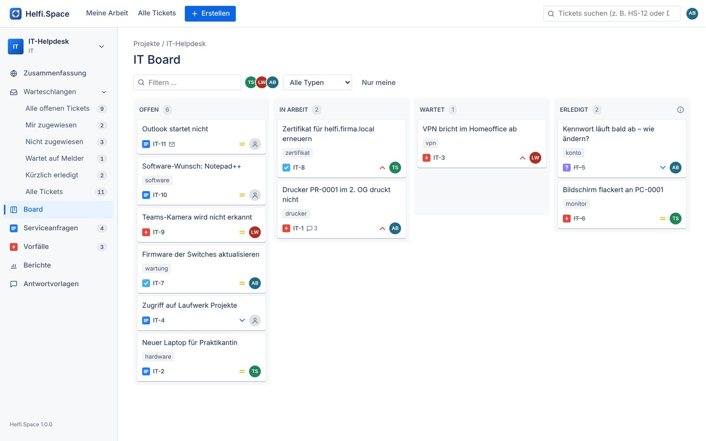
Board eines Projekts mit den vier Status-Spalten
Rollen
Rolle
Was sie darf
Benutzer
Eigene Tickets melden und verfolgen, Tickets sehen, an denen er als Teilnehmer beteiligt ist, antworten und Dateien anhängen. Interne Notizen sieht er nie.
Bearbeiter
Alle Tickets sehen und bearbeiten: Status, Zuweisung, Priorität, Typ, Stichwörter, interne Notizen, Antwortvorlagen, Mehrfachauswahl, Berichte.
Administrator
Alles, was Bearbeiter dürfen, und zusätzlich die Administration: Projekte, Benutzer, AD, SSO, Sicherheit, E-Mail, Erscheinungsbild, Import, System.
Mit Active Directory ergibt sich die Rolle bei jeder Anmeldung aus den AD-Gruppen (Kapitel 5.4). Bei der Ersteinrichtung entsteht außerdem ein lokaler Administrator, der auch funktioniert, wenn das AD nicht erreichbar ist.
Status, Typen und Prioritäten
Status
Bedeutung
Offen
Neu oder noch nicht begonnen.
In Arbeit
Jemand kümmert sich darum.
Wartet
Es wird auf eine Antwort des Melders gewartet. Antwortet er, öffnet sich das Ticket wieder.
Erledigt
Abgeschlossen. Der Melder bekommt eine Mail. Antwortet er darauf, öffnet sich das Ticket wieder.
Typen: Störung (etwas funktioniert nicht), Anfrage (etwas wird gebraucht), Aufgabe (interne Arbeit), Frage; für Bearbeiter zusätzlich Problem (gemeinsame Ursache mehrerer Störungen) und Change (geplante Änderung), siehe Kapitel 4. Prioritäten: Sehr hoch, Hoch, Mittel, Niedrig.
Jedes Ticket hat eine Nummer aus Projektschlüssel und laufender Zahl, z. B. IT-42. Sie steht auch im Betreff aller Mails, z. B. [IT-42].
Aufbau der Oberfläche
Kopfzeile: Logo, Meine Arbeit, Alle Tickets, der Knopf Erstellen, die Suche (Ticketnummer oder Stichwort) und rechts das Benutzermenü mit Profil, Sprache (Deutsch/English) und Abmelden.
Seitenleiste (Bearbeiter): das aktuelle Projekt, Zusammenfassung, Warteschlangen mit Live-Zahlen, Board, Serviceanfragen, Vorfälle, Probleme, Changes, Meine Genehmigungen, Change-Kalender, Servicekatalog, Geräte & Dienste, Wissen, Berichte, Antwortvorlagen und für Admins die Einstellungen.
Seitenleiste (Benutzer):Meine Anfragen, je nach Einrichtung Service anfordern und Meine Genehmigungen, sowie Hilfe & Wissen.
Die Oberfläche gibt es auf Deutsch und Englisch. Ohne eigene Wahl richtet sie sich nach der Sprache des Browsers.
Für alle: Anmelden und Anfragen stellen alle
Anmelden
Öffne die Adresse, die deine IT dir genannt hat, z. B. https://helfi.firma.local. Mit Active Directory meldest du dich mit deinem Windows-Konto an – als m.muster, FIRMA\m.muster oder m.muster@firma.local. Ist Single Sign-on eingerichtet, gibt es zusätzlich einen Knopf „Mit Firmenkonto anmelden“, oder du wirst direkt weitergeleitet.
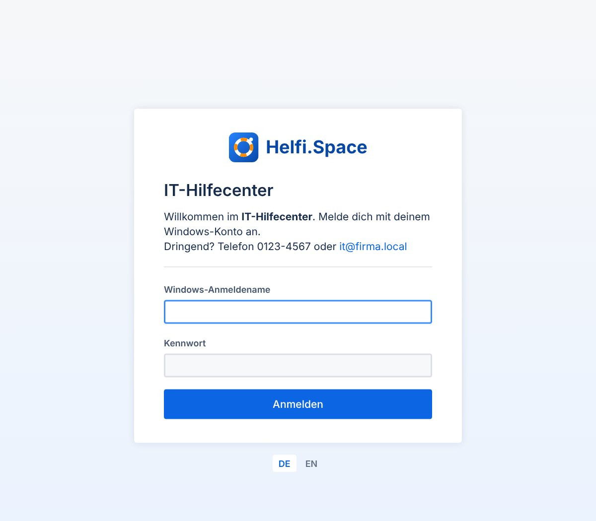
Anmeldeseite mit eigenem Begrüßungstext
Ohne Firmenkonto: Steht unter dem Anmelden „Konto erstellen“, kannst du dir selbst ein Konto anlegen: Name, E-Mail-Adresse und Kennwort eingeben und den Link in der Bestätigungsmail öffnen. Hast du schon per Mail Anfragen gestellt, nimm dieselbe Adresse – sie erscheinen dann im Konto. Angemeldet wird mit der E-Mail-Adresse. „Kennwort vergessen?“ schickt dir einen Link, mit dem du ein neues Kennwort festlegst.
Meldest du dich von außerhalb des Firmennetzes an, fragt Helfi.Space je nach Einstellung nach dem Kennwort zusätzlich einen 6-stelligen Code aus deiner Authenticator-App ab (siehe 2.8).
Automatische Abmeldung: Wer eine Weile nichts tut, wird aus Sicherheitsgründen abgemeldet. Zwei Minuten vorher fragt Helfi.Space „Noch da?“ – mit Weiterarbeiten geht es einfach weiter. Solange du klickst oder tippst, bleibst du angemeldet.
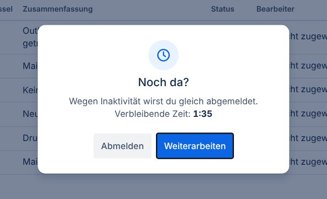
Zwei Minuten vor der automatischen Abmeldung
Ein Problem melden
Es gibt zwei Wege:
Per E-Mail an das Helpdesk-Postfach, z. B. helpdesk@firma.local. Der Betreff wird zur Zusammenfassung, der Text zur Beschreibung, Anhänge kommen mit. Wen du in An oder CC setzt, wird automatisch Teilnehmer. Du bekommst eine Eingangsbestätigung mit der Ticketnummer.
Im Browser über Erstellen (sofern die IT das erlaubt): Zusammenfassung, Beschreibung, Typ und Priorität angeben, optional Dateien anhängen.
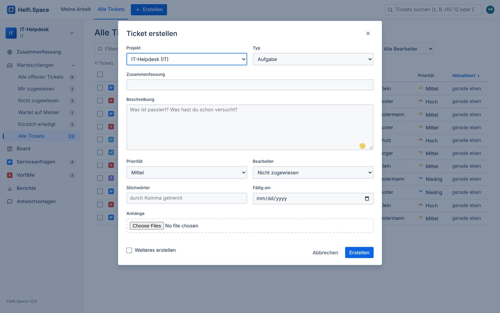
Dialog „Ticket erstellen“
Screenshots einfügen: Ein Bild aus der Zwischenablage (z. B. mit Win+Umschalt+S aufgenommen) fügst du mit Strg+V direkt in die Beschreibung oder einen Kommentar ein.
Meine Anfragen
Unter Meine Anfragen stehen alle Tickets, die du gemeldet hast oder an denen du beteiligt bist. Mit den Filtern oben grenzt du nach Status oder „Ich bin Teilnehmer“ ein.
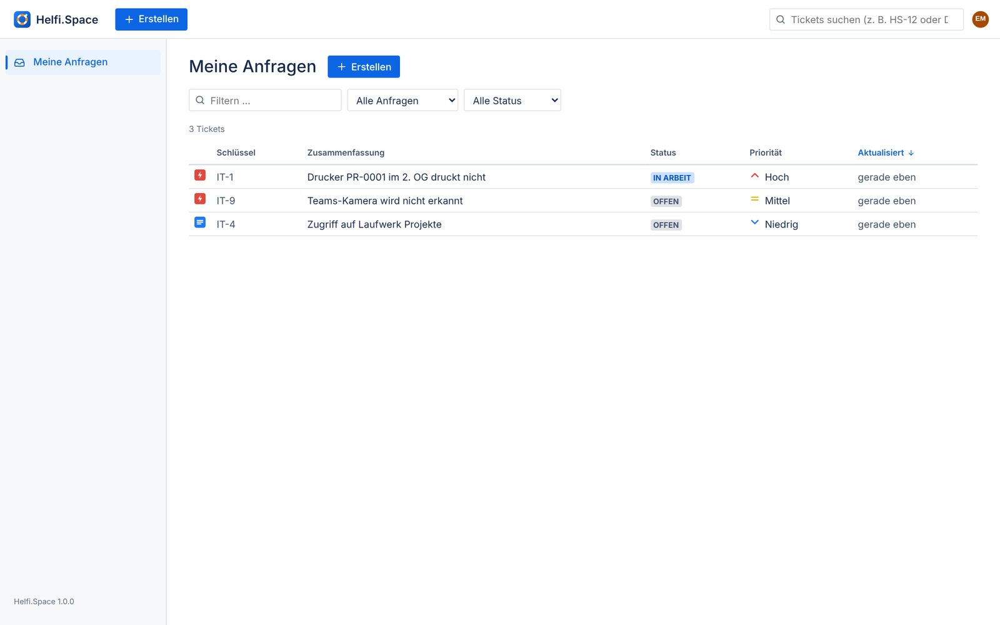
Meine Anfragen aus Sicht eines Benutzers
Antworten und Dateien
Öffne ein Ticket und schreibe unten in das Kommentarfeld; mit Speichern oder Strg+Enter geht die Antwort an die IT. Alternativ antwortest du einfach auf eine Mail von Helfi.Space – die Antwort landet automatisch im richtigen Ticket, zitierter Verlauf wird abgeschnitten.
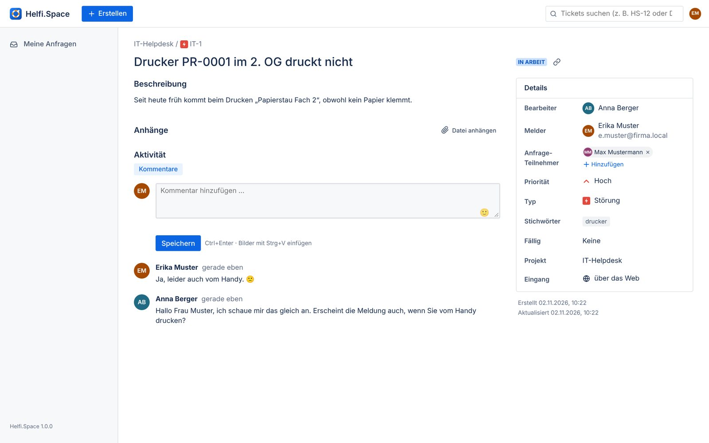
Ein Ticket aus Sicht des Melders
Dateien hängst du unter Anhänge → Datei anhängen an. Bilder werden direkt angezeigt, alle anderen Dateien werden heruntergeladen.
Anfrage-Teilnehmer
Neben dem Melder können weitere Personen an einem Ticket beteiligt sein, z. B. Kollegen mit demselben Problem. Unter Anfrage-Teilnehmer → Hinzufügen fügst du Kollegen mit eigenem Konto hinzu (höchstens 20 je Ticket): Namen eintippen, die Vorschläge erscheinen darunter; mit Klick oder ↑/↓ und Enter auswählen, Esc bricht ab.
Teilnehmer sehen das Ticket, können kommentieren und Dateien anhängen und bekommen dieselben Mails wie der Melder.
Sie sehen keine internen Notizen und können Status, Zuweisung oder Titel nicht ändern. Vom Melder sehen sie nur den Namen, nicht Mailadresse und Anmeldenamen.
Entfernen können sich Teilnehmer selbst; außerdem der Melder und die Bearbeiter.
Bearbeiter können auch eine beliebige Mailadresse eintragen und finden Personen direkt aus dem Active Directory (markiert mit „AD“), auch über die Mailadresse. Die Person wird dabei mit Name und Mailadresse aus dem AD übernommen – sie muss sich vorher nicht angemeldet haben.
Emojis
🙂-Knopf unten rechts im Textfeld: Auswahl mit Suche (z. B. „daumen“ oder „drucker“), Gruppen und „Zuletzt verwendet“.
Kurznamen::dau schlägt 👍 vor (Pfeiltasten und Enter oder Tab übernehmen, Esc schließt). :tada: wird sofort zu 🎉.
Klassische Smileys werden umgewandelt, sobald danach ein Leerzeichen folgt: :) → 🙂, ;) → 😉, :D → 😄, :( → 🙁, :P → 😛, :O → 😮, <3 → ❤️, (y) → 👍. Strg+Z macht die Umwandlung sofort rückgängig.
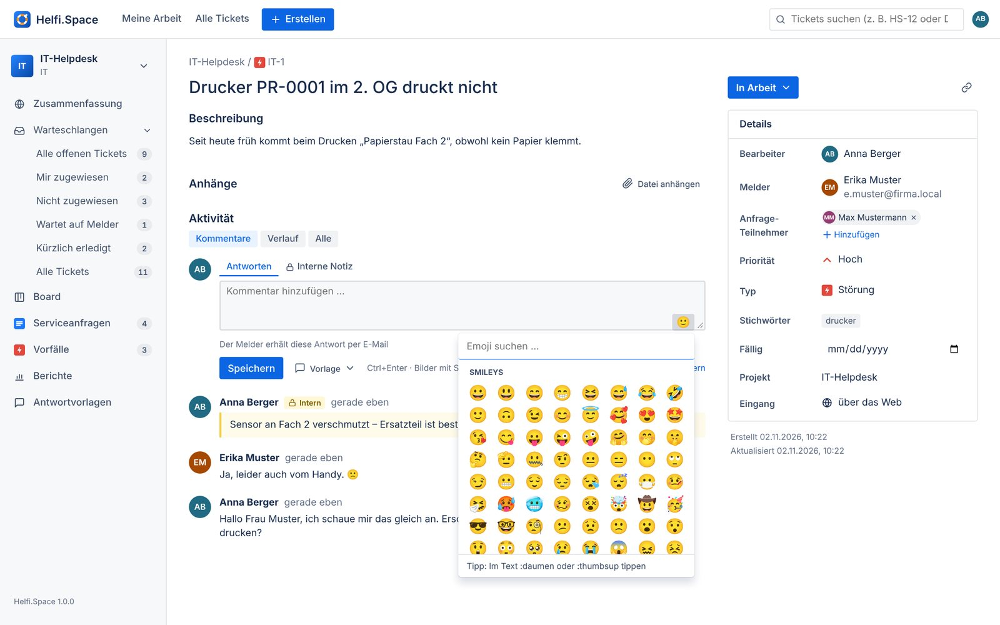
Emoji-Auswahl im Kommentarfeld
Profil, Sprache und Kennwort
Über dein Bild oben rechts → Profil erreichst du:
Name und E-Mail-Adresse – bei lokalen Konten änderbar (für eine neue Mailadresse ist das aktuelle Kennwort nötig). Bei AD- und SSO-Konten kommen beide Angaben aus dem Firmenkonto.
Sprache der Oberfläche und der Mails an dich.
Neuigkeiten (ebenfalls im Menü oben rechts): was sich in den einzelnen Versionen geändert hat. Nach einem Update zeigt Helfi.Space die Neuigkeiten einmal von selbst. Ein Klick auf die Versionsnummer unten in der Seitenleiste führt ebenfalls dorthin, „Helfi.Space“ daneben öffnet die Website helfi.space.
Zwei-Faktor-Anmeldung einrichten oder verwalten.
Kennwort ändern (nur lokale Konten; AD-Kennwörter änderst du wie gewohnt in Windows).
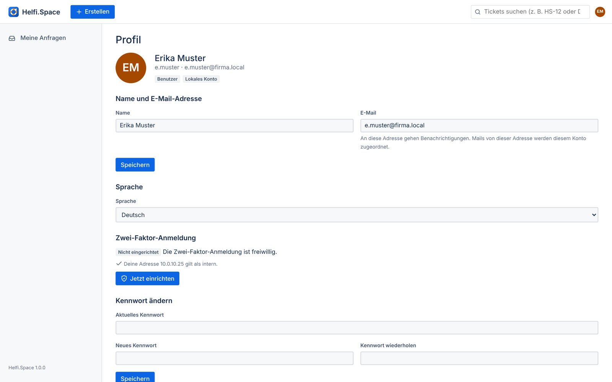
Profil eines Benutzers
Zwei-Faktor-Anmeldung einrichten
Wenn deine IT es verlangt (oder freiwillig): Profil → Zwei-Faktor-Anmeldung → Jetzt einrichten.
Authenticator-App auf dem Handy öffnen (z. B. Microsoft Authenticator, Google Authenticator, Aegis, 2FAS).
Den QR-Code scannen.
Den angezeigten 6-stelligen Code eingeben und Aktivieren.
Die 10 Wiederherstellungscodes sicher aufbewahren (ausdrucken oder im Passwortmanager). Jeder gilt genau einmal, falls das Handy nicht zur Hand ist.
Die Ersteinrichtung geht aus Sicherheitsgründen normalerweise nur im Firmennetz (außer nach einer SSO-Anmeldung, deren zweiten Faktor der Identitätsanbieter geprüft hat). So kann niemand mit einem erbeuteten Kennwort von außen seinen eigenen zweiten Faktor hinterlegen. Handy verloren? Mit einem Wiederherstellungscode anmelden oder die IT bitten, die 2FA zurückzusetzen.
Service anfordern
Für häufige Wünsche gibt es fertige Formulare, z. B. „Neuer Mitarbeiter“ oder „Software-Wunsch“: Service anfordern in der Seitenleiste. Ein Klick auf eine Kachel öffnet das Formular; Pflichtfelder sind mit * markiert. Nach dem Absenden landest du im neuen Ticket.
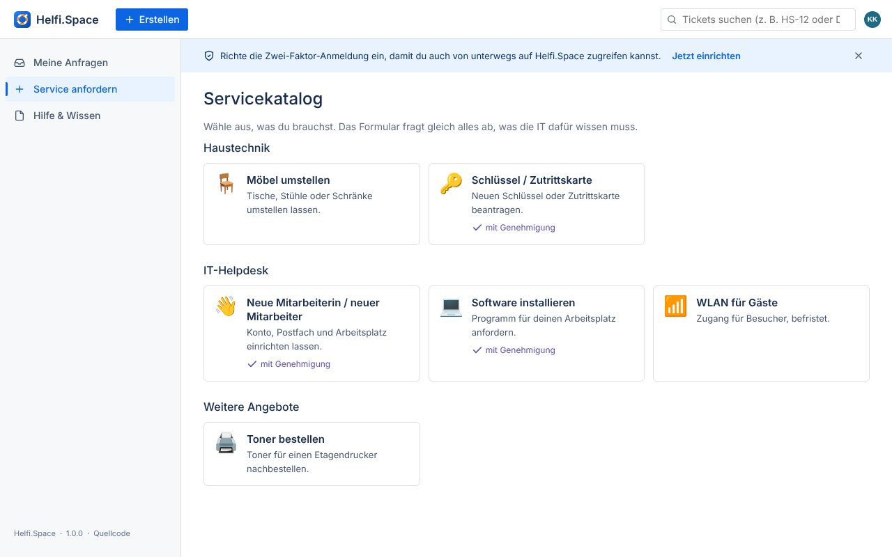
Servicekatalog aus Sicht eines Benutzers
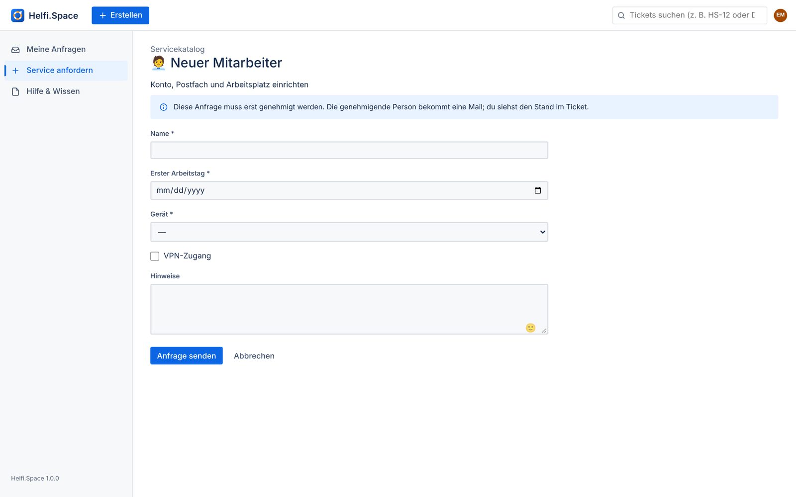
Formular „Neuer Mitarbeiter“ – diese Anfrage muss genehmigt werden
Steht bei einem Angebot „mit Genehmigung“, muss erst jemand zustimmen, z. B. deine Vorgesetzte. Den Stand siehst du oben im Ticket.
Genehmigen
Wer als Genehmiger eingetragen ist, bekommt eine Mail und sieht in der Seitenleiste Meine Genehmigungen. Im Ticket genügt ein Klick auf Genehmigen oder Ablehnen, auf Wunsch mit Kommentar. Die Entscheidung geht als Antwort an den Melder; eine Ablehnung schließt die Anfrage. Genehmiger ohne Bearbeiter-Rolle sehen nur die Anfragen, über die sie entscheiden, und vom Melder nur den Namen.
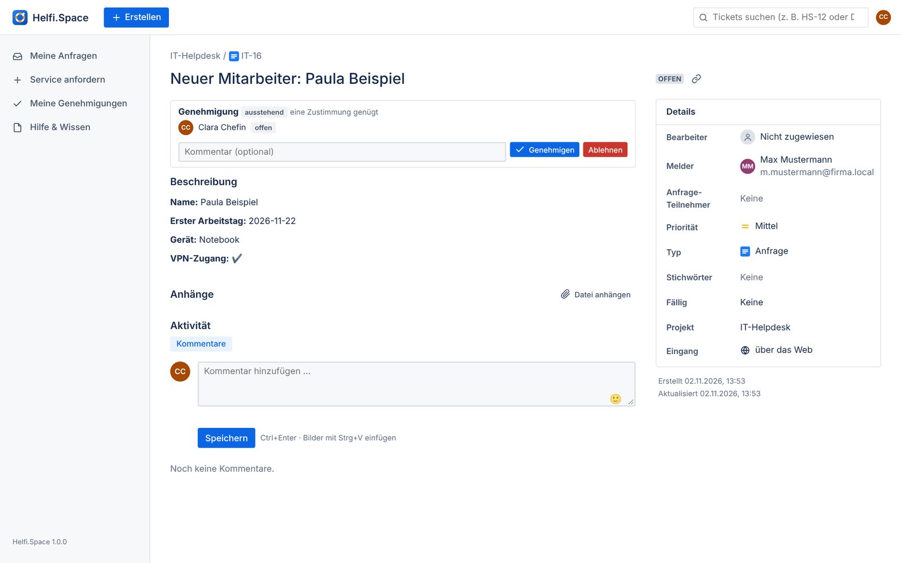
Genehmigung im Ticket aus Sicht der Vorgesetzten
Hilfe & Wissen
Unter Hilfe & Wissen findest du Anleitungen der IT, z. B. „VPN im Homeoffice einrichten“. Schon beim Melden schlägt Helfi.Space passende Artikel vor („Vielleicht hilft das schon“), sobald du die Zusammenfassung tippst. Ein Klick öffnet den Artikel, ohne dass deine Meldung verloren geht.
Unter jedem Artikel kannst du einen Kommentar schreiben, wenn etwas fehlt oder nicht mehr stimmt – die IT wird benachrichtigt. Drucken / PDF druckt den Artikel oder speichert ihn als PDF.
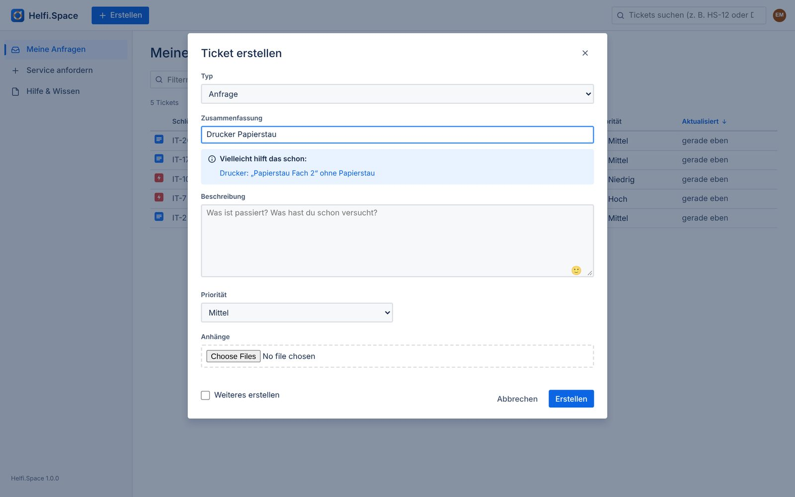
Vorschlag aus der Wissensdatenbank beim Melden
Bewerten
Ist dein Ticket erledigt, bittet dich die IT eventuell um eine kurze Bewertung. In der „Erledigt“-Mail stehen fünf Links von „sehr zufrieden“ bis „sehr unzufrieden“: Ein Klick genügt, eine Anmeldung ist nicht nötig. Auf der Seite kannst du die Sterne noch ändern und freiwillig einen Kommentar schreiben. Angemeldet geht das auch direkt im Ticket.
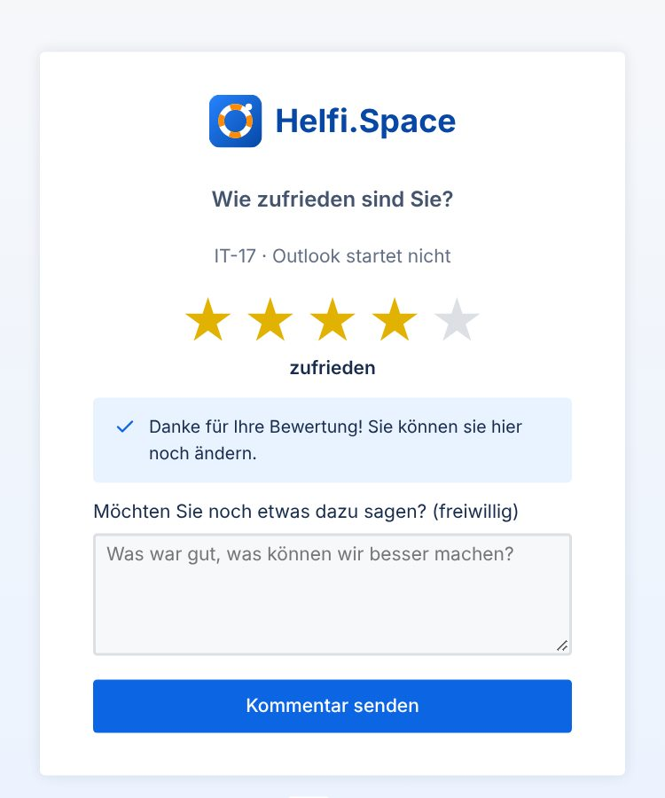
Bewertungsseite nach einem Klick in der Mail
Auf dem Smartphone
Auf dem Handy öffnet sich Helfi.Space automatisch in einer eigenen Oberfläche, die sich wie eine App bedient. Unten steht eine Leiste mit Anfragen (Bearbeiter: Meine Arbeit und Tickets), dem runden ＋, Wissen und Ich. Seiten schieben sich von rechts herein; zurück geht es mit dem Pfeil oben links, mit einem Wisch vom linken Rand oder mit der Zurück-Taste. Listen ziehst du zum Aktualisieren nach unten.
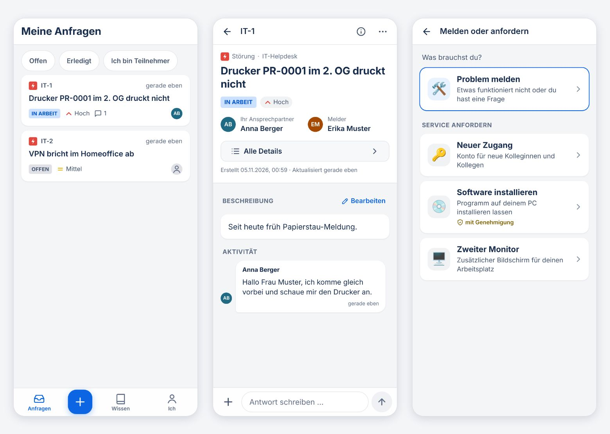
Meine Anfragen, ein Ticket mit Antwortleiste und das ＋ mit Servicekatalog
Problem melden: ＋ → Problem melden. Titel und Beschreibung eintragen, mit Foto aufnehmen direkt die Kamera nutzen oder mit Datei Bilder und Dokumente anhängen. Schon beim Tippen des Titels zeigt Helfi.Space passende Hilfeartikel – vielleicht ist die Lösung schon da. Absenden legt die Anfrage an und öffnet sie. Was du noch nicht abgeschickt hast, bleibt erhalten, solange der Tab offen ist.
Service anfordern: Unter ＋ stehen die Angebote des Servicekatalogs als Kacheln. Pflichtfelder sind mit * markiert; braucht ein Angebot eine Genehmigung, steht das im Formular.
Ticket: Die Kommentare sehen aus wie ein Chat. Unten schreibst du deine Antwort, über ＋ hängst du Fotos oder Dateien an. Bearbeiter blenden mit Alle neben „Aktivität“ auch Statuswechsel und Zuweisungen ein; das Handy merkt sich die Wahl. Mit @ in der Antwortleiste erwähnen Bearbeiter Kollegen, unter Tickets zeigt der Chip Erwähnt die Tickets, in denen sie erwähnt wurden. Titel und Beschreibung deiner eigenen Anfrage änderst du über Bearbeiten neben „Beschreibung“.
Wissen: Suche, Kategorien, Zuletzt angesehen, Meistgelesen und der Seitenbaum. Lange Artikel haben oben ein Inhalt-Verzeichnis, breite Tabellen schiebst du seitlich. Unter jedem Artikel kannst du einen Kommentar schreiben.
Ich: Name, E-Mail-Adresse und Kennwort (bei lokalen Konten), Sprache, Zwei-Faktor-Anmeldung, App installieren, Neuigkeiten und Desktop-Ansicht. Über das Benutzermenü der Desktop-Ansicht (Handy-Ansicht) kommst du zurück.
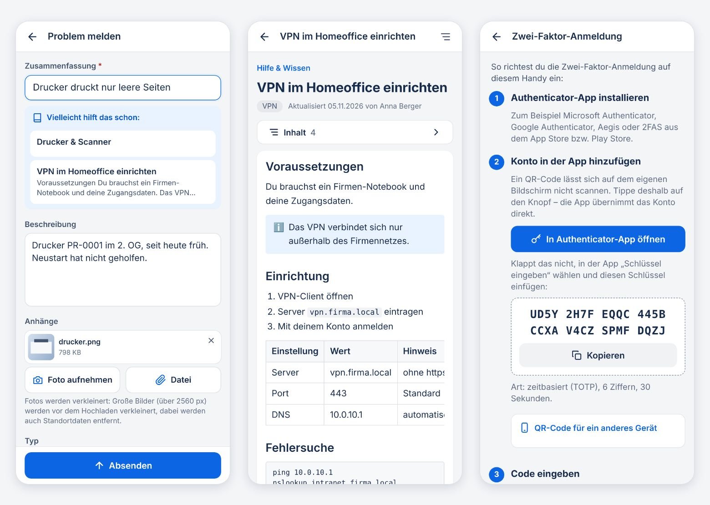
Problem melden mit Foto und Wissensvorschlägen, ein Hilfeartikel und die Einrichtung der Zwei-Faktor-Anmeldung auf dem Handy
Zwei-Faktor-Anmeldung auf dem Handy einrichten: Einen QR-Code auf dem eigenen Bildschirm kann das Handy nicht scannen. Tippe deshalb unter Ich → Zwei-Faktor-Anmeldung → Jetzt einrichten auf In Authenticator-App öffnen – die App übernimmt das Konto direkt. Klappt das nicht, kopierst du den angezeigten Schlüssel und fügst ihn in der App unter „Schlüssel eingeben“ ein. Der QR-Code ist für ein zweites Gerät weiterhin da. Danach den 6-stelligen Code eingeben und die Wiederherstellungscodes kopieren, teilen oder speichern. Ist 2FA für dein Konto Pflicht, geht das genauso direkt bei der Anmeldung.
Als App installieren:iPhone/iPad: Helfi.Space in Safari öffnen, unten auf Teilen tippen, Zum Home-Bildschirm → Hinzufügen. Android: in Chrome oben rechts ⋮ → App installieren (oder Ich → App installieren → Jetzt installieren). Helfi.Space startet dann im Vollbild mit eigenem Symbol und aktualisiert sich selbst; nach einem Update erscheint kurz „Neue Version – Neu laden“. Ohne Verbindung zeigt die App einen Hinweis mit Erneut versuchen.
Datenschutz: Fotos werden ohne Aufnahmeort hochgeladen, große Fotos werden schon auf dem Handy verkleinert. Nicht gesendete Entwürfe werden beim Abmelden gelöscht. Tickets, Anhänge und Antworten werden nicht auf dem Gerät gespeichert, nur die Programmdateien. Es wird nichts aus dem Internet geladen.
Für Bearbeiter Bearbeiter
Warteschlangen und Zusammenfassung
Die Seitenleiste zeigt für das gewählte Projekt feste Warteschlangen mit Live-Zahlen: Alle offenen Tickets, Mir zugewiesen, Nicht zugewiesen, Wartet auf Melder, Kürzlich erledigt (7 Tage) und Alle Tickets. Darunter Serviceanfragen und Vorfälle (offene Anfragen bzw. Störungen) sowie Erwähnt mich (siehe Kollegen erwähnen). Das Projekt wechselst du oben in der Seitenleiste.
Die Zusammenfassung zeigt Kennzahlen, Verteilungen nach Status, Typ und Priorität und die dringendsten offenen Tickets.
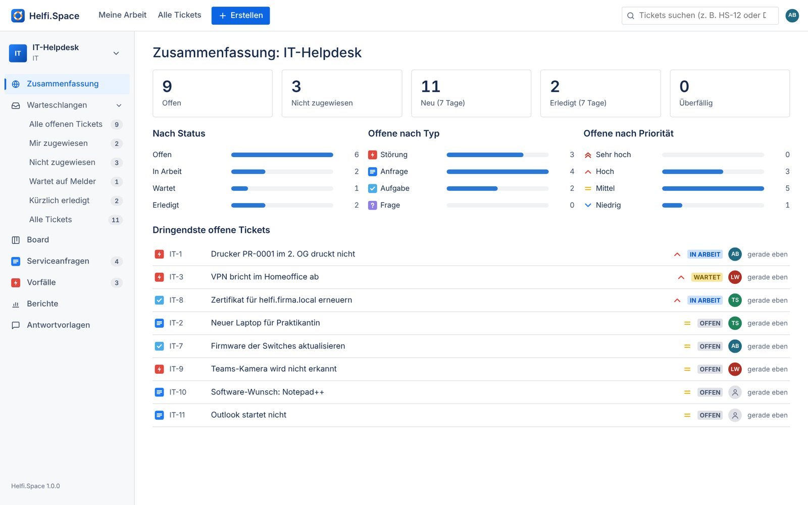
Zusammenfassung eines Projekts
Meine Arbeit in der Kopfzeile sammelt alles, was dir zugewiesen ist, was niemandem zugewiesen ist und was du selbst gemeldet hast.
Board
Das Board zeigt die Tickets in vier Spalten nach Status. Ziehe eine Karte mit der Maus in eine andere Spalte, um den Status zu ändern, oder innerhalb einer Spalte, um die Reihenfolge festzulegen. Oben filterst du nach Text, Bearbeiter (Avatare), Typ oder „Nur meine“.
Ticketliste und Filter
Alle Tickets zeigt eine sortierbare Liste. Filter für Projekt, Status, Typ, Priorität und Bearbeiter lassen sich kombinieren; ein Klick auf eine Spaltenüberschrift sortiert. Die Adresse der Seite enthält die Filter – du kannst sie als Lesezeichen speichern oder weitergeben.
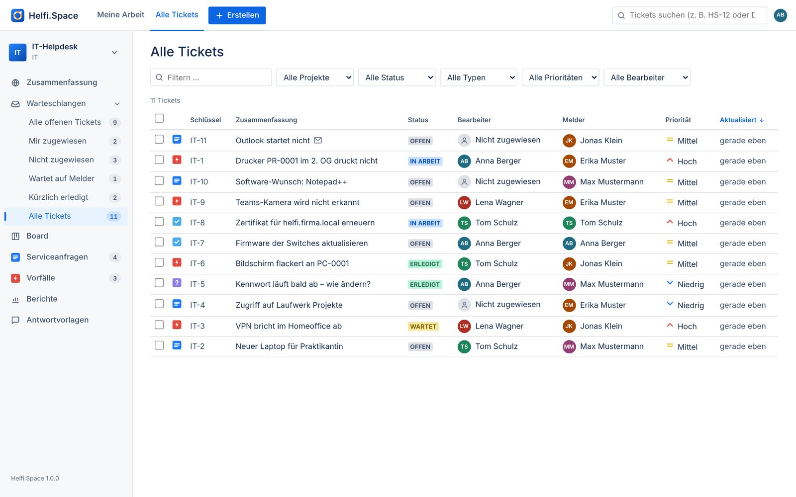
Ticketliste mit Filtern
Suche
Das Suchfeld oben durchsucht alle Tickets im Volltext: Titel, Beschreibung, Antworten, Stichwörter und Namen der Anhänge. Bearbeiter finden zusätzlich interne Notizen und beteiligte Personen (auch über Mailadresse und Anmeldenamen). Benutzer ohne Bearbeiter-Rolle finden Tickets über Titel, Beschreibung, öffentliche Antworten, Namen der Anhänge, Stichwörter und die im Ticket sichtbaren Namen – nicht über Mailadressen oder Anmeldenamen.
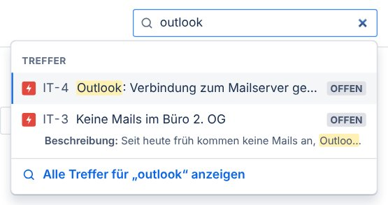
Treffer schon beim Tippen – mit Fundstelle; ↑/↓ und Enter öffnen das Ticket
Treffer beim Tippen: Ab zwei Zeichen erscheinen bis zu acht Tickets mit Nummer, Titel, Status und Fundstelle. Mit ↑/↓ und Enter oder per Klick öffnest du ein Ticket direkt. Enter ohne Auswahl oder Alle Treffer anzeigen öffnet die Ticketliste mit allen Ergebnissen. Im leeren Feld stehen die zuletzt geöffneten Tickets. Auf dem Handy funktioniert das im Tab Tickets genauso.
Wortteile werden gefunden: „drucker“ findet auch „Netzwerkdrucker“.
Mehrere Wörter müssen alle vorkommen, egal in welcher Reihenfolge. "genaue Folge" in Anführungszeichen, -wort schließt aus.
Die Treffer sind nach Relevanz sortiert, Titeltreffer zuerst. Unter jedem Treffer steht die Fundstelle mit markierten Wörtern.
Eine Ticketnummer springt direkt zum Ticket.
Ein Ticket bearbeiten
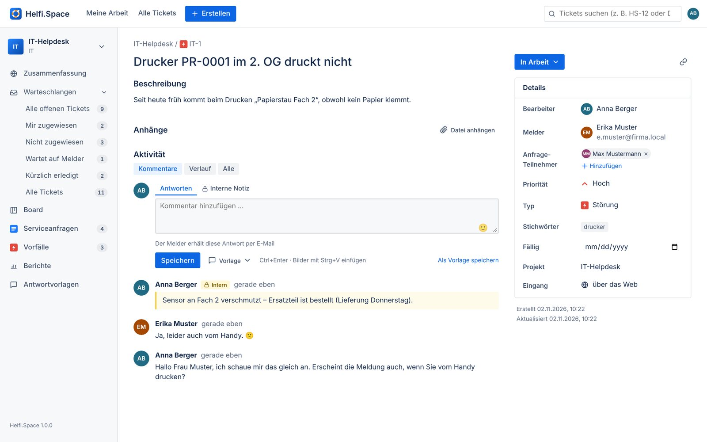
Ticketansicht: links Beschreibung und Aktivität, rechts Status und Details
Status über den Knopf oben rechts (z. B. „Offen“ → „In Arbeit“).
Bearbeiter, Priorität, Typ, Stichwörter, Fällig und Projekt direkt in den Details ändern. „Mir zuweisen“ geht mit einem Klick oder der Taste i.
Titel und Beschreibung durch Anklicken bearbeiten.
Projekt wechseln: Das Ticket bekommt im neuen Projekt eine neue Nummer, die alte steht im Verlauf. Antworten auf alte Mails werden trotzdem richtig zugeordnet.
Aktivität: Reiter Kommentare, Verlauf (jede Änderung mit Person und Zeit) und Alle. Bei einer geänderten Beschreibung zeigt Änderung anzeigen die Unterschiede und die frühere Fassung.
Link kopieren über das Kettensymbol oben rechts.
Antworten und interne Notizen
Über dem Kommentarfeld wählst du zwischen Antworten und Interne Notiz:
Antworten gehen per E-Mail an den Melder und alle Teilnehmer, jeweils in deren Sprache.
Interne Notizen (gelb hinterlegt) sehen nur Bearbeiter. Sie gehen nie per E-Mail hinaus, auch eingefügte Bilder bleiben intern.
Mails, die von der Adresse eines Bearbeiters kommen, gelten nie als Bearbeiter-Antwort (Absender lassen sich fälschen). Bearbeiter antworten deshalb immer über die Weboberfläche. Antworten per Mail auf Zuweisungs-, SLA- oder Genehmigungsmails an Bearbeiter werden interne Notizen und öffnen das Ticket nicht wieder.
Kollegen erwähnen (@)
Brauchst du jemanden im Ticket, erwähnst du ihn: Im Antwortfeld @ und ein paar Buchstaben tippen, dann die Person mit Klick, ↑/↓ und Enter oder Tab auswählen; Esc schließt die Liste. Im Kommentar steht der Name hervorgehoben, deine eigene Erwähnung farbig.
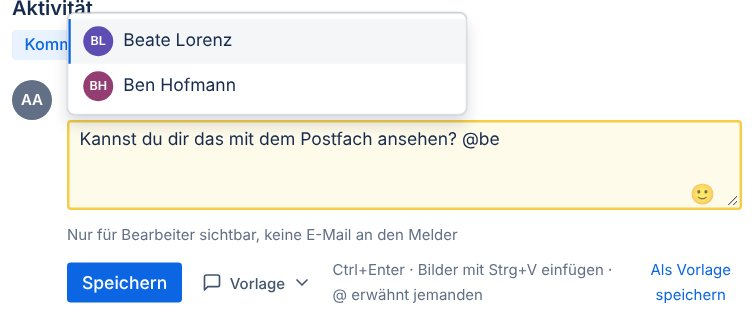
„@be“ in einer internen Notiz – die Liste zeigt passende Bearbeiter
Wen du erwähnen kannst: In einer internen Notiz nur Bearbeiter. In einer Antwort außerdem Melder, Teilnehmer und Genehmigende des Tickets. Wer das Ticket nicht sehen darf, steht nicht in der Liste.
Was passiert: Die erwähnte Person bekommt eine Mail vom Ticketsystem mit deinem Namen, dem Kommentar und dem Link. Melder und Teilnehmer, die die Antwort sowieso per Mail bekommen, erhalten keine zweite.
Erwähnt mich: In der Seitenleiste unter den Ansichten stehen alle Tickets, in denen du erwähnt wurdest; die Zahl zählt die, die du noch nicht geöffnet hast. In den Listen markiert ein @ neue Erwähnungen, im Ticket der betreffende Kommentar. Öffnest du das Ticket, gilt die Erwähnung als gesehen.
Eine Erwähnung macht niemanden zum Teilnehmer. Soll jemand dauerhaft informiert werden, füge ihn unter Anfrage-Teilnehmer hinzu.
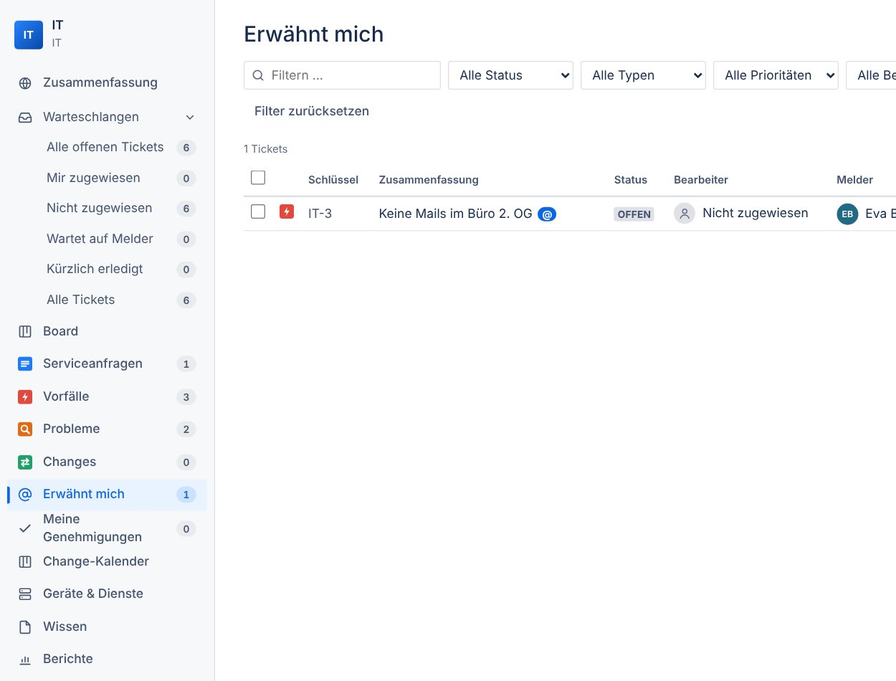
„Erwähnt mich“ mit Zähler; das @ markiert eine neue Erwähnung
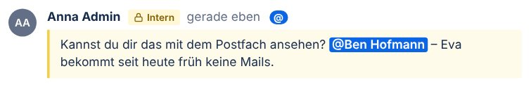
Der Kommentar mit deiner Erwähnung im Ticket
HTML-Mails
Kommt ein Ticket oder eine Antwort als HTML-Mail, zeigt Helfi.Space sie formatiert an – mit Tabellen, Fettdruck, Farben, Signatur und eingebetteten Bildern. Der Umschalter Formatiert | Text wechselt zur Textfassung; der Browser merkt sich die Wahl.
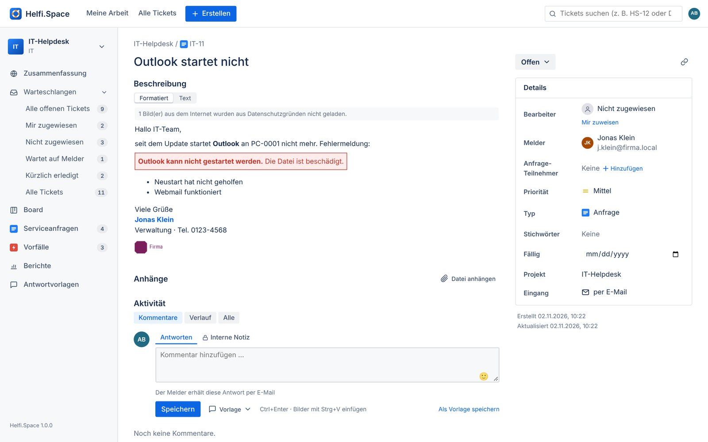
Formatierte Ansicht einer HTML-Mail
Bilder aus dem Internet (oft Zählpixel) werden aus Datenschutzgründen nie geladen; ein Hinweis nennt ihre Anzahl.
Bei Antworten ist der zitierte Verlauf eingeklappt („Zitierten Text anzeigen“).
Bearbeitet wird immer die Textfassung. Nach dem Bearbeiten einer Beschreibung gilt nur noch der Text.
Antwortvorlagen
Für Antworten, die immer wieder gleich sind: im Kommentarfeld auf Vorlage klicken, tippen zum Suchen, mit Enter oder Klick einfügen. Der Text landet an der Cursorposition und lässt sich vor dem Speichern anpassen.
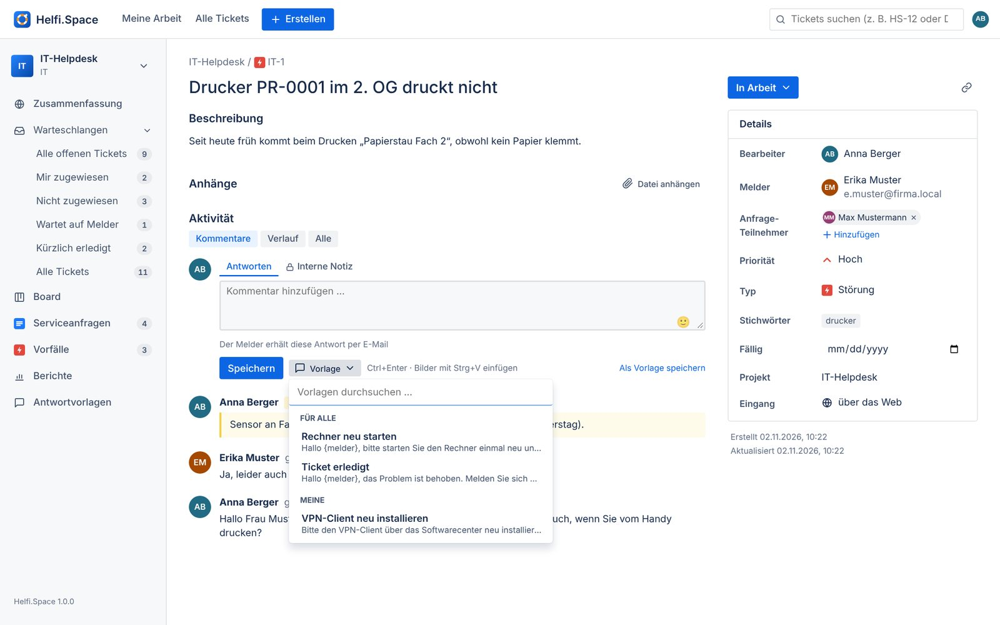
Vorlage auswählen: oben „Für alle“, darunter die eigenen
Platzhalter werden beim Einfügen ersetzt: {melder}, {ticket}, {titel}, {bearbeiter}.
Neue Vorlage: Text im Kommentarfeld schreiben und Als Vorlage speichern wählen. Persönliche Vorlagen verwaltest du im Profil, Vorlagen für alle pflegen Admins unter Administration → Antwortvorlagen.
KI-Unterstützung
Hat ein Admin die KI-Unterstützung eingerichtet, gibt es für Bearbeiter zwei Helfer. Alles, was die KI liefert, ist ein Vorschlag: Nichts wird automatisch gesendet oder gespeichert, Anfragende sehen davon nichts.
KI-Zusammenfassung unter der Beschreibung: Zusammenfassen erstellt eine Übersicht „Worum es geht – Bisher passiert – Offen / nächster Schritt“. Sie bleibt gespeichert; ändert sich das Ticket, steht ein Hinweis dabei und Neu erstellen holt eine aktuelle.
KI im Antwortfeld (auf dem Handy das Funkeln-Symbol): Antwort vorschlagen schreibt einen Entwurf aus dem Ticketverlauf. Stehen schon Stichpunkte im Feld, baut die KI daraus die Antwort. Mit Text im Feld gibt es außerdem Text glätten, Kürzen und Übersetzen (Deutsch/Englisch).
Der Vorschlag ersetzt den Text im Feld; Rückgängig holt den vorherigen zurück. Anrede und Grußformel fügt Helfi beim Mailversand selbst hinzu – bitte den Vorschlag vor dem Speichern lesen und anpassen.
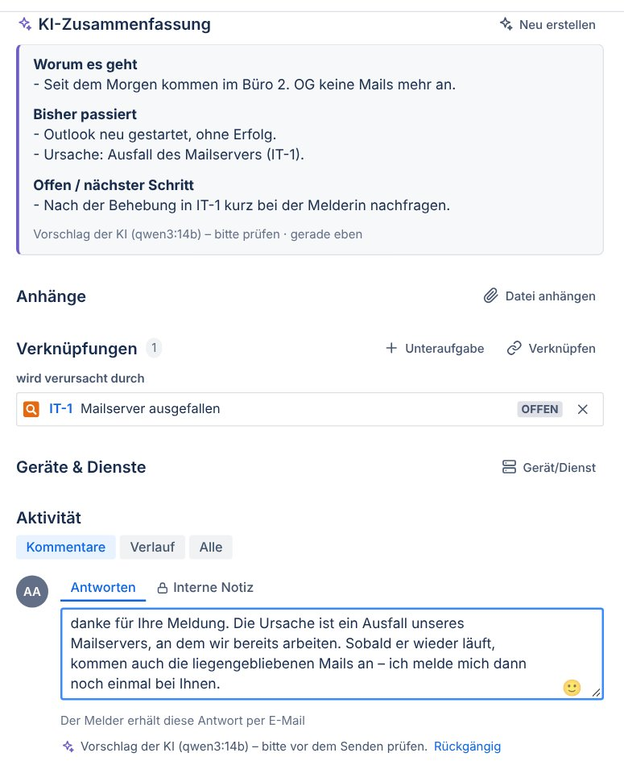
KI-Zusammenfassung und ein Antwortvorschlag aus Stichpunkten – mit Hinweis und „Rückgängig“
Mehrere Tickets auf einmal
In Alle Tickets wählst du Tickets über die Kästchen aus (Umschalt+Klick für einen Bereich, x für das markierte Ticket). Die Aktionsleiste bietet:
Erledigen und Status – jeweils mit optionalem Kommentar: als Antwort an Melder (Mail an Melder und Teilnehmer) oder als Interne Notiz, auch mit Vorlage und Platzhaltern je Ticket.
Kommentieren – Antwort oder interne Notiz für alle ausgewählten Tickets, ohne den Status zu ändern.
Verknüpfen … – alle ausgewählten Tickets mit einem Ticket verbinden, z. B. „wird verursacht durch IT-42“; auf Wunsch gleich mit Status und Kommentar („Ursache wird in IT-42 behoben“).
Zuweisen, Priorität und Verschieben in ein anderes Projekt.
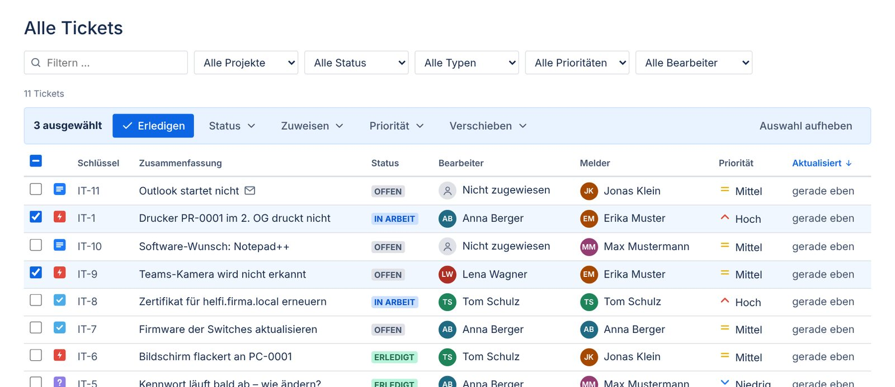
Drei Störungen ausgewählt – Aktionsleiste mit Erledigen, Status, Kommentieren und Verknüpfen
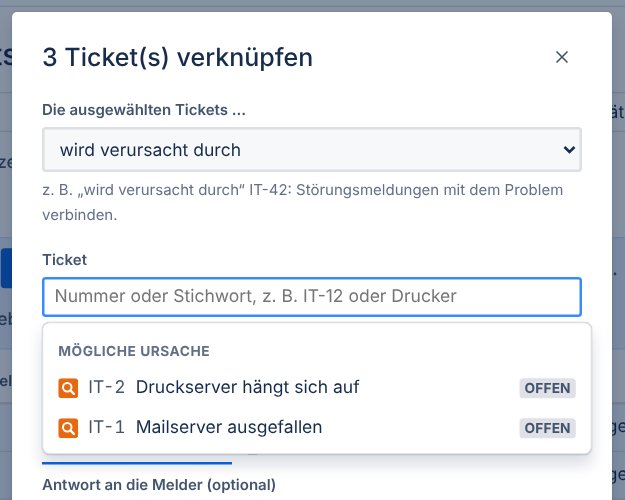
Alle ausgewählten Störungen auf einmal mit dem Problem verknüpfen – mit Vorschlägen für die mögliche Ursache
Berichte
Berichte zeigt für einen Zeitraum (7, 30, 90 Tage, dieses Jahr oder frei) und optional ein Projekt: erstellte, erledigte und offene Tickets, „Erledigt pro Bearbeiter“, den Verlauf „Erstellt und erledigt“ und eine Tabelle je Bearbeiter (erledigt, offen zugewiesen, bearbeitet, Antworten, interne Notizen, durchschnittliche Lösungsdauer). Die Tabelle lässt sich sortieren und als CSV herunterladen.
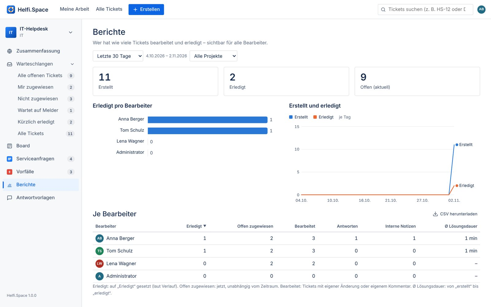
Berichte
Tastenkürzel
? zeigt alle Kürzel. Sie greifen nie, während du in ein Feld schreibst.
Wo
Taste
Wirkung
überall
c
Ticket erstellen
/
Suchen
g dann b / i / m
Board / Alle Tickets / Meine Arbeit
Ticket
i
mir zuweisen
a
Bearbeiter wählen
m
kommentieren
e / l
Titel / Stichwörter bearbeiten
.
Aktionen mit Suche (Status, Priorität, Typ, Vorlage …)
Strg+Enter
Kommentar speichern
Listen
j / k
nächstes / voriges Ticket
o / Enter
markiertes Ticket öffnen
x
markiertes Ticket auswählen
Enter auf einem Link oder Knopf, der den Fokus hat, löst diesen aus. Die mit j/k markierte Zeile öffnet Enter nur, wenn der Fokus nicht auf einem Bedienelement liegt.
Tickets werden nie gelöscht
Tickets sind Nachweise: Wer hat wann was gemeldet, was wurde getan? Deshalb lassen sie sich nicht löschen, auch nicht von Administratoren. Erledigtes wird auf „Erledigt“ gesetzt. Gegen Spam hilft eine Absender-Regel „Ignorieren“ (5.7) – dann entsteht gar nicht erst ein Ticket.
IT-Service-Management (ITIL) Bearbeiter
Helfi.Space bildet die wichtigsten ITIL-Prozesse ab, ohne dass man sie alle nutzen muss: Störungen und Major Incidents, Service Level, Probleme, Changes, Wissen, Servicekatalog, Geräte und Dienste sowie Zufriedenheit. Was nicht eingeschaltet oder eingerichtet ist, bleibt unsichtbar.
Verknüpfungen und Unteraufgaben
Im Abschnitt Verknüpfungen eines Tickets – schneller über den Knopf Verknüpfen oben neben dem Status, auf dem Handy unter Details – verbindest du Tickets miteinander. Das Zielticket suchst du nach Nummer oder Stichwort; solange das Feld leer ist, schlägt Helfi mögliche Ursachen (offene Probleme, Major Incidents) und ähnliche Tickets vor. Arten: „bezieht sich auf“, „ist Duplikat von“ (auf Wunsch wird das Duplikat gleich erledigt), „blockiert“, „verursacht“ und „ist Unteraufgabe von“. Unteraufgabe legt direkt eine Aufgabe mit Bearbeiter an; ein Balken zeigt, wie viele schon erledigt sind.
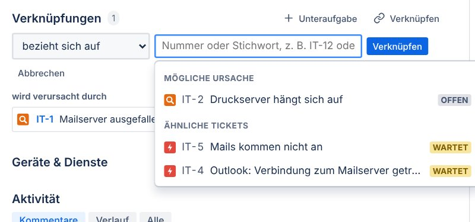
Verknüpfen: Vorschläge bei leerem Feld – mögliche Ursache und ähnliche Tickets
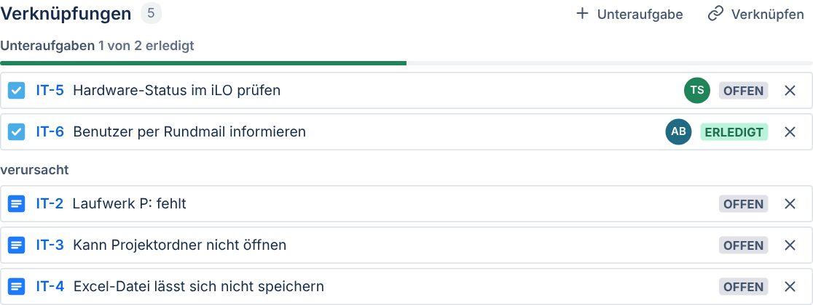
Unteraufgaben mit Fortschritt und verursachte Störungen
Auswirkung, Dringlichkeit und Major Incident
In den Details setzt du Auswirkung (wie viele sind betroffen?) und Dringlichkeit (wie schnell muss es gehen?). Sind beide gesetzt, ergibt sich die Priorität aus der ITIL-Matrix, z. B. hoch/hoch = Sehr hoch.
Eine schwere Störung mit vielen Betroffenen markierst du als Major Incident. Dann erscheint für alle Bearbeiter oben ein roter Balken. Einzelne Meldungen verknüpfst du mit „verursacht“. Info an alle Betroffenen schickt eine Nachricht an die Melder und Teilnehmer aller offenen verknüpften Tickets; mit „lösen“ werden sie zusammen erledigt.
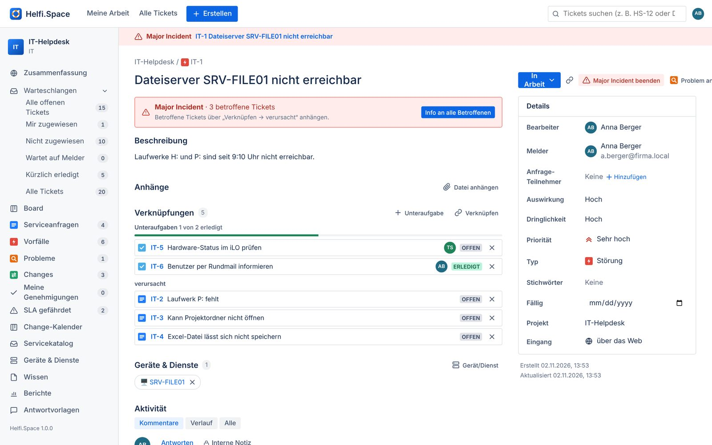
Major Incident mit Unteraufgaben, betroffenen Tickets und Gerät
Service Level (SLA)
Sind SLAs eingeschaltet, hat jedes Ticket von Benutzern zwei Uhren: erste Reaktion (bis zur ersten öffentlichen Antwort der IT) und Lösung. Beide laufen nur in der Geschäftszeit; Feiertage und auf Wunsch der Status „Wartet“ halten sie an. Bei 80 % der Zeit wird das Ticket gelb und der Bearbeiter (sonst die Projektleitung) bekommt eine Mail, bei Überschreitung wird es rot. Die Warteschlange SLA gefährdet zeigt alle Tickets, die knapp werden.
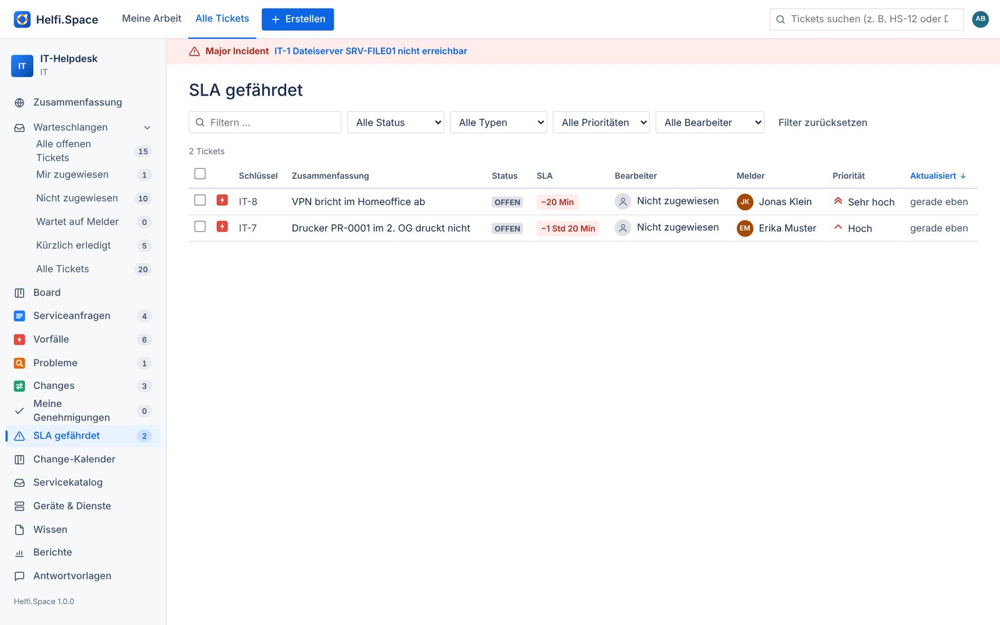
Warteschlange „SLA gefährdet“ mit Restzeit
Admin Ziele je Priorität, Geschäftszeit, Feiertage und Warnschwelle unter Administration → Service Level. Standard: aus.
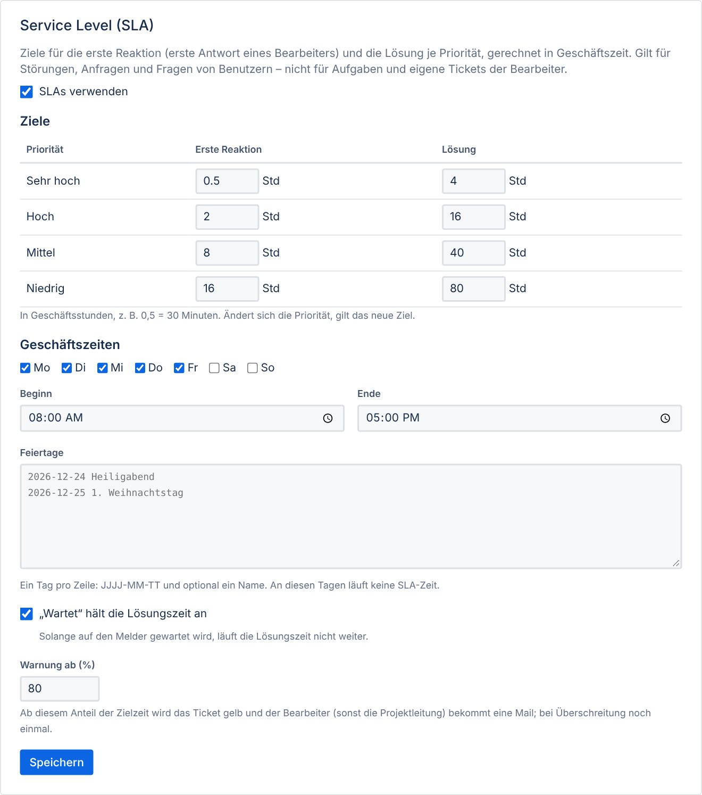
Administration → Service Level
Probleme und bekannte Fehler
Häufen sich gleiche Störungen, steckt meist eine gemeinsame Ursache dahinter. Problem anlegen im Ticket erzeugt ein Problem und verknüpft die Störung. Weitere Störungen hängst du mit „verursacht“ an. Im Problem hältst du Ursache und Workaround fest. Als bekannter Fehler markiert, sehen Bearbeiter den Workaround in allen verknüpften Störungen und übernehmen ihn mit einem Klick als Antwort. Der Reiter Bekannte Fehler unter Wissen listet alle.
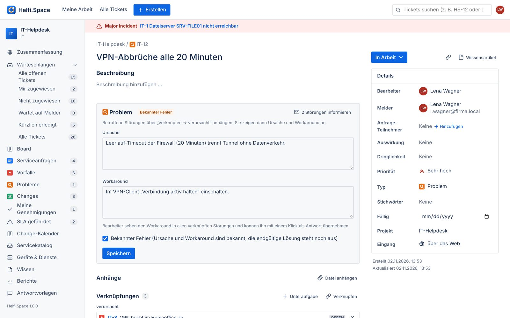
Problem mit Ursache, Workaround und „bekannter Fehler“
Change-Management
Geplante Änderungen an der IT (Firewall-Regel, Update, Umzug) laufen als Ticket vom Typ Change. Es gibt drei Arten:
Normal: braucht eine Genehmigung.
Standard: vorab genehmigte Routine nach einer Vorlage.
Der Abschnitt Change führt durch die Phasen Entwurf → Zur Genehmigung → Genehmigt → Geplant → In Umsetzung → Überprüfung → Abgeschlossen. Fehlende Angaben (Grund, Zeitfenster, Umsetzungs- und Rückfallplan) nennt Helfi.Space beim jeweiligen Schritt. Genehmiger entscheiden im Ticket oder unter Meine Genehmigungen. Beim Abschluss wählst du das Ergebnis; bei „Mit Problemen“ und „Zurückgerollt“ ist eine Nachbetrachtung Pflicht.
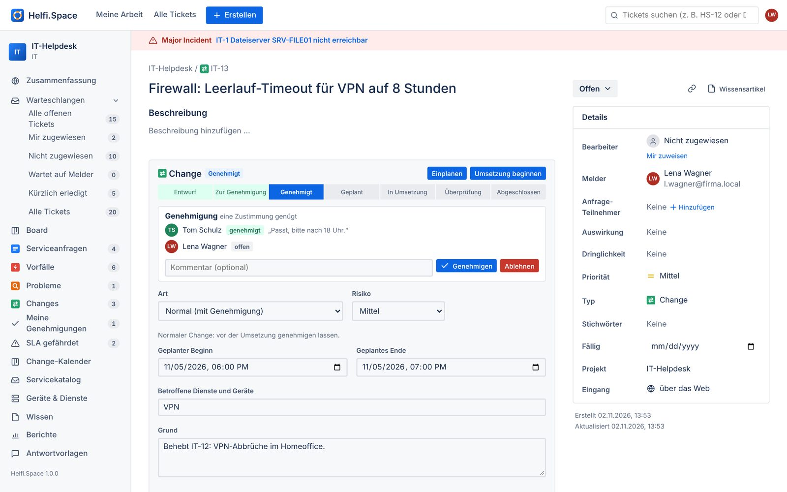
Change mit Phasen, Genehmigung und Planung
Der Change-Kalender zeigt alle geplanten Changes im Monat; zeitliche Überschneidungen sind rot markiert.
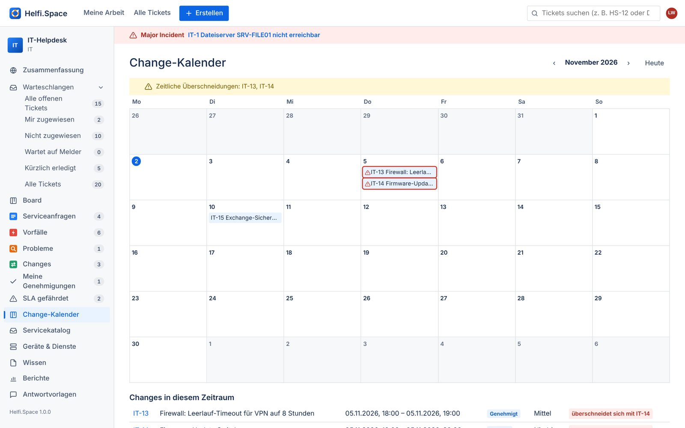
Change-Kalender mit Überschneidung
Admin Genehmiger, Regel („eine Zustimmung genügt“ oder „alle müssen zustimmen“) und Vorlagen für Standard-Changes unter Administration → Change.
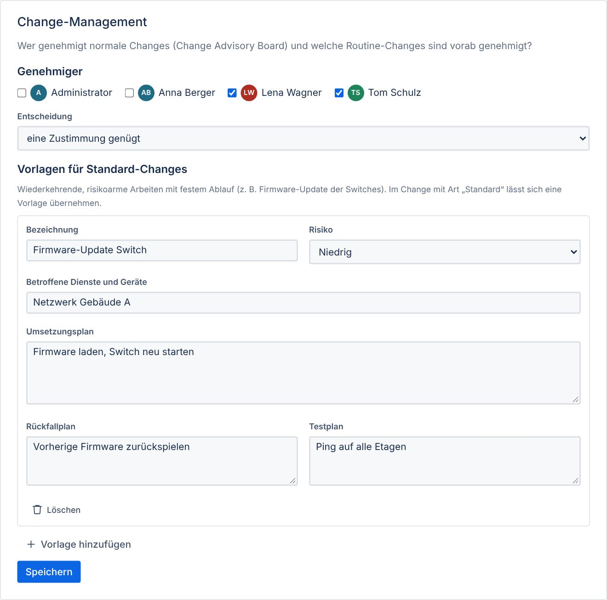
Administration → Change
Wissensdatenbank
Wissen sammelt Anleitungen und Lösungen. Artikel sind intern (nur Bearbeiter) oder öffentlich (alle Angemeldeten, auch als Vorschlag beim Melden). Die Suche gewichtet Treffer im Titel höher. Aus einem gelösten Ticket legt Wissensartikel oben im Ticket einen Entwurf an; vor dem Veröffentlichen persönliche Angaben entfernen. Ab drei Überschriften zeigt die Artikelansicht rechts ein Inhaltsverzeichnis.
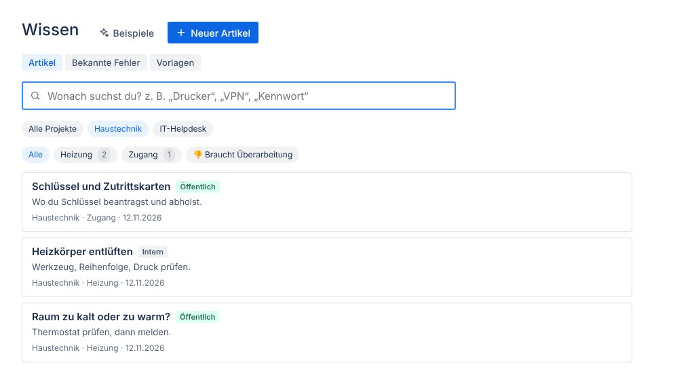
Wissensdatenbank mit Kategorien
Der Editor
Artikel schreibst du direkt im fertigen Aussehen. Die Werkzeugleiste bleibt beim Scrollen oben stehen und bietet Textart (Normal, Überschrift 1–3, Zitat, Codeblock), Fett, Kursiv, Unterstrichen, über … auch Durchgestrichen und Code im Text, Aufzählung, nummerierte Liste, Checkliste, Link, Bild, Emoji, Infobox (Hinweis, Tipp, Warnung), Tabelle und Trennlinie.
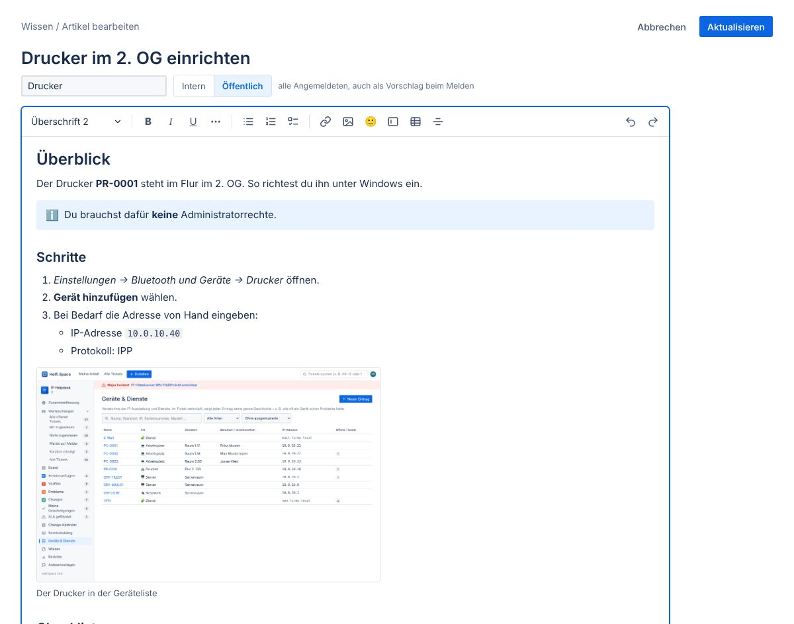
Editor mit Infobox, verschachtelter Liste und Bild
Bilder: mit Strg+V aus der Zwischenablage, per Drag & Drop oder über den Bild-Knopf. Ein Klick aufs Bild stellt die Größe ein (klein, mittel, volle Breite) und eine Bildunterschrift.
Einfügen aus Word, Webseiten oder E-Mails: Überschriften, Listen, Tabellen, Fettschrift und Links bleiben erhalten. Bilder von fremden Webadressen werden nicht übernommen; kopiere sie einzeln als Bild.
Links (Strg+K) gehen auf Webadressen, Mailadressen, Tickets (IT-42) oder andere Artikel (KB-3).
Tabellen:Tab springt in die nächste Zelle, in der letzten Zelle entsteht eine neue Zeile. Zeilen und Spalten fügst du über den Tabellen-Knopf hinzu oder löschst sie dort.
Entwurf: Ungespeicherte Änderungen sichert der Browser laufend. Beim nächsten Öffnen kannst du sie wiederherstellen. Wer die Seite mit ungespeicherten Änderungen verlässt, wird gefragt.
Tippen
Ergebnis
#, ##, ### + Leertaste
Überschrift 1–3
- oder 1. + Leertaste
Aufzählung / nummerierte Liste (Tab rückt ein)
[] + Leertaste
Checkliste (Kästchen anklicken zum Abhaken)
> + Leertaste
Zitat
``` + Enter
Codeblock (Enter in einer leeren letzten Zeile verlässt ihn)
--- + Enter
Trennlinie
Strg+B / I / U / E
Fett / kursiv / unterstrichen / Code im Text
Strg+Alt+1…3, 0
Überschrift 1–3, normaler Text
Strg+S
Speichern
Seitenbaum
Artikel können unter anderen Artikeln stehen, zum Beispiel „Onboarding → Konten anlegen → Windows-Konto“. Im Editor wählst du unter Liegt unter, wo der Artikel steht; am Artikel legt Unterseite gleich einen Artikel darunter an. Am PC ziehst du Artikel im Seitenbaum einfach auf einen anderen oder auf „oberste Ebene“. Neuer Ordner im Kopf des Seitenbaums legt eine kurze Sammelseite ohne eigenen Text an, z. B. „Windows“ oder „Microsoft Office“. Die Startseite zeigt den Seitenbaum und die zuletzt geänderten Artikel, jeder Artikel seinen Pfad, den Baum links und seine Unterseiten am Ende.
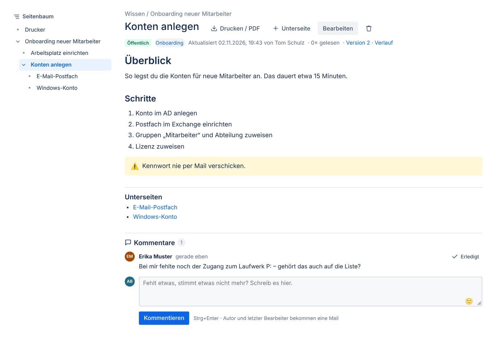
Artikel mit Seitenbaum, Unterseiten und Kommentar
Benutzer sehen nur öffentliche Seiten. Steht eine öffentliche Seite unter einer internen, rückt sie für Benutzer eine Ebene hoch.
Löschst du einen Artikel mit Unterseiten, rücken diese eine Ebene hoch. Verschieben legt keine neue Version an.
Versionen
Jedes Speichern mit Änderung ist eine Version. Im Editor-Kopf kannst du eine kurze Änderungsnotiz eintragen. Version n · Verlauf am Artikel listet alle Versionen. Wähle zwei aus und vergleiche sie: Entferntes ist rot durchgestrichen, Neues grün. Ältere Versionen kannst du ansehen und wiederherstellen; dabei entsteht eine neue Version, der Verlauf bleibt vollständig.
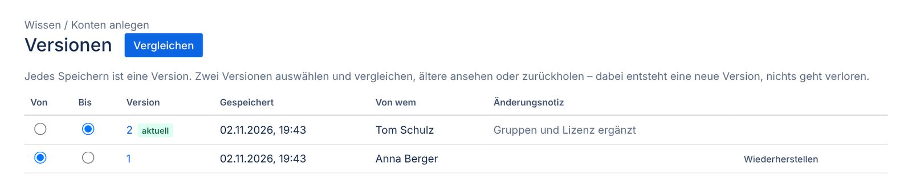
Versionen eines Artikels
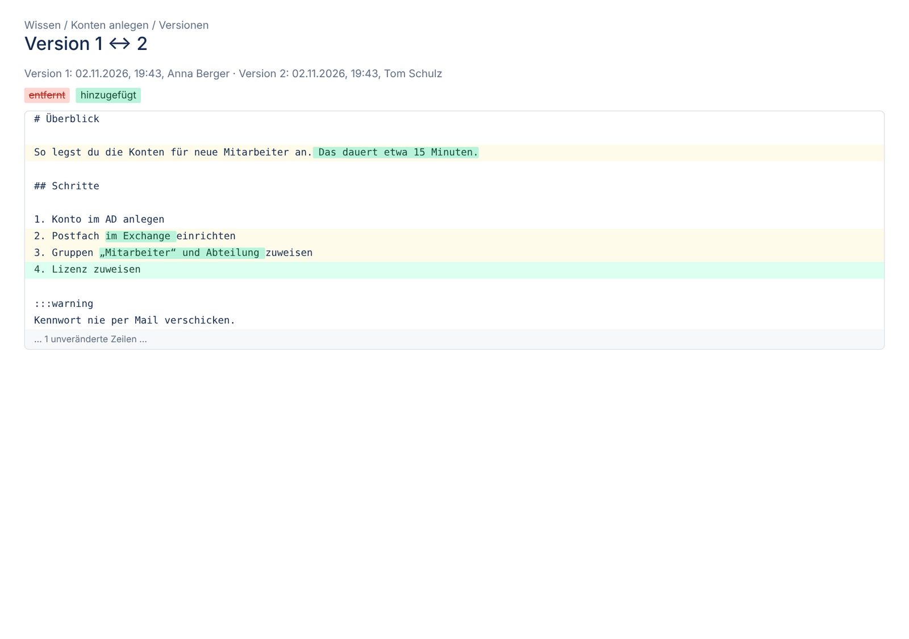
Vergleich zweier Versionen
Vorlagen
Neuer Artikel fragt zuerst, womit du anfangen möchtest: leere Seite, Anleitung, Störung beheben (FAQ), Checkliste, Bekannter Fehler oder eine eigene Vorlage. Eigene Vorlagen speicherst du im Editor mit dem Kopier-Symbol (Als Vorlage speichern) und pflegst sie unter Wissen → Vorlagen.
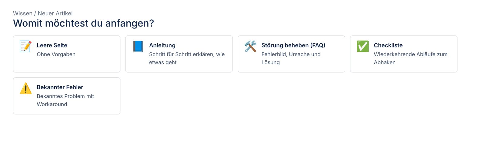
Vorlagenwahl beim neuen Artikel
Kommentare
Unter jedem Artikel kann kommentieren, wer ihn sehen darf – auch Benutzer bei öffentlichen Artikeln. Autor und letzter Bearbeiter bekommen eine Mail. Bearbeiter markieren Kommentare als erledigt; erledigte klappen zu. Eigene Kommentare lassen sich löschen. In der Artikelliste zeigt 💬 die Zahl offener Kommentare.
Drucken und PDF
Drucken / PDF am Artikel öffnet den Druckdialog; dort „Als PDF speichern“ wählen. Gedruckt werden nur Titel, Pfad, Stand und Inhalt, ohne Seitenumbrüche mitten in Bildern, Tabellen oder Infoboxen. Hat der Artikel Unterseiten, kannst du mit allen Unterseiten drucken: Es entsteht ein Dokument mit Inhaltsverzeichnis, jede Seite beginnt auf einem neuen Blatt – zum Beispiel ein komplettes Onboarding-Handbuch.
Servicekatalog einrichten Admin
Unter Administration → Servicekatalog legst du Angebote an: Bezeichnung, Emoji, Beschreibung, Projekt und Formularfelder (Text, mehrzeilig, Auswahl, Häkchen, Datum; jeweils optional Pflicht). Optional wählst du Genehmiger, auch ohne Bearbeiter-Rolle, und ob eine oder alle Zustimmungen nötig sind. Anfragen werden Tickets vom Typ Anfrage; die Antworten stehen in der Beschreibung. Wie Benutzer den Katalog sehen, steht in 2.9.
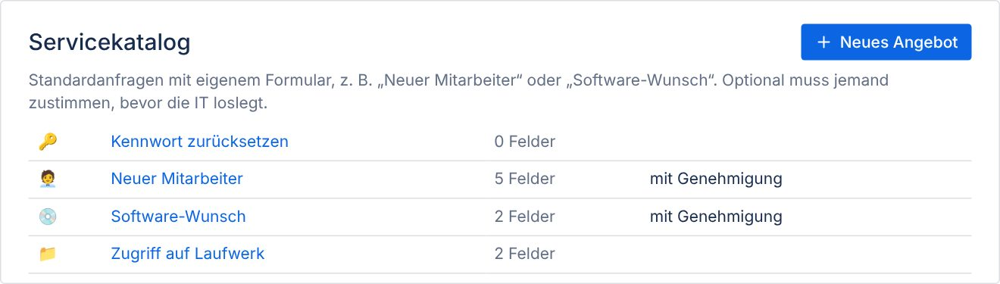
Administration → Servicekatalog
Geräte & Dienste
Ein schlankes Verzeichnis der IT-Ausstattung und Dienste (CI-Verzeichnis). Jeder Eintrag hat Art, Status (in Betrieb, in Wartung, ausgemustert), Standort, Benutzer, IP-Adresse, Seriennummer, Hersteller und Modell. Im Ticket verknüpfst du betroffene Geräte und Dienste im Abschnitt Geräte & Dienste. Bei Changes sind das die betroffenen Dienste. Die Detailseite eines Eintrags zeigt alle Tickets dazu, so fallen wiederkehrende Störungen auf.
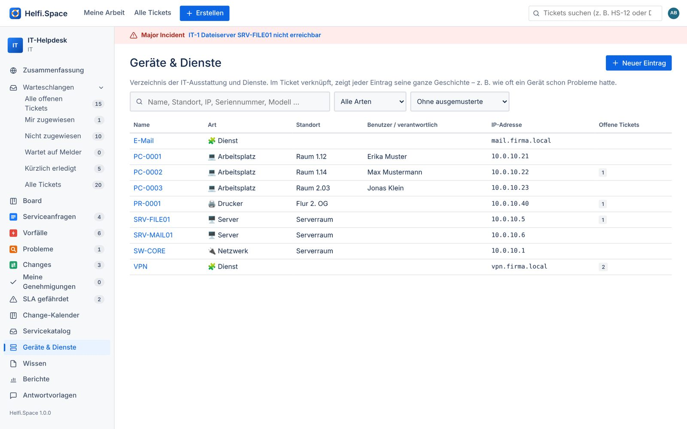
Geräte & Dienste mit offenen Tickets je Eintrag
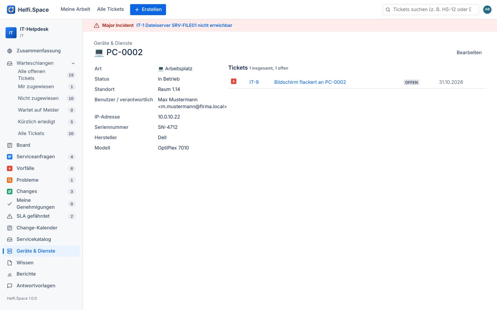
Ein Gerät mit seiner Ticket-Geschichte
AdminCSV-Import aus der Inventarisierung: Die erste Zeile enthält die Spaltennamen (Name/Hostname, Typ, Standort, IP-Adresse, Seriennummer, Hersteller, Modell, Benutzer, Status – deutsch oder englisch). Werte wie „Notebook“ oder „Switch“ werden der passenden Art zugeordnet. Vorhandene Namen werden aktualisiert. Löschen können nur Administratoren, und nur, solange keine Tickets verknüpft sind; sonst „ausgemustert“ setzen.
Zufriedenheitsumfrage Admin
Einschalten unter Administration → E-Mail → Zufriedenheitsumfrage. Dann enthält die „Erledigt“-Mail an den Melder die Bewertungslinks (2.12). Jeder Link enthält ein zufälliges Token, gespeichert wird nur dessen Hash. Der Link gilt eine einstellbare Zahl von Tagen und zeigt nur Ticketnummer und Titel. Wird ein Ticket wieder geöffnet und erneut erledigt, gibt es eine neue Umfrage. Bearbeiter sehen die Bewertung oben im Ticket.
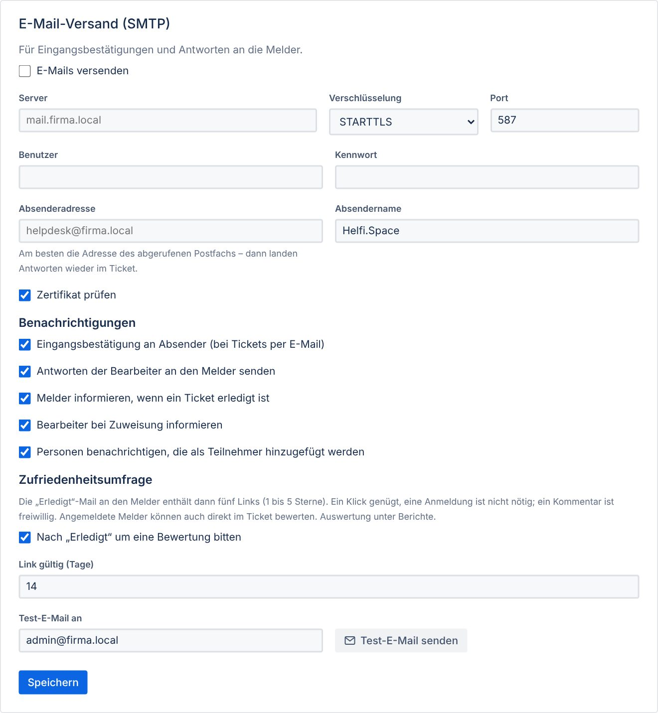
Administration → E-Mail mit der Zufriedenheitsumfrage
ITIL-Kennzahlen
Unter Berichte folgen auf die Bearbeiter-Statistik (3.9) weitere Kennzahlen für denselben Zeitraum:
Servicequalität: erledigte Anfragen und Störungen, beim ersten Kontakt gelöst (höchstens eine Antwort, keine Rückfrage, nie wieder geöffnet), Quote der Wiedereröffnungen, Major Incidents.
SLA-Einhaltung für Reaktion und Lösung, gesamt und je Priorität.
Changes je Monat: Arten, abgelehnte, Ergebnisse, Erfolgsquote und Anteil der Notfall-Changes.
Probleme: neu, gelöst, offen, bekannte Fehler.
Zufriedenheit: Durchschnitt, Rücklaufquote, Verteilung der Sterne, Werte je Bearbeiter und die neuesten Kommentare.
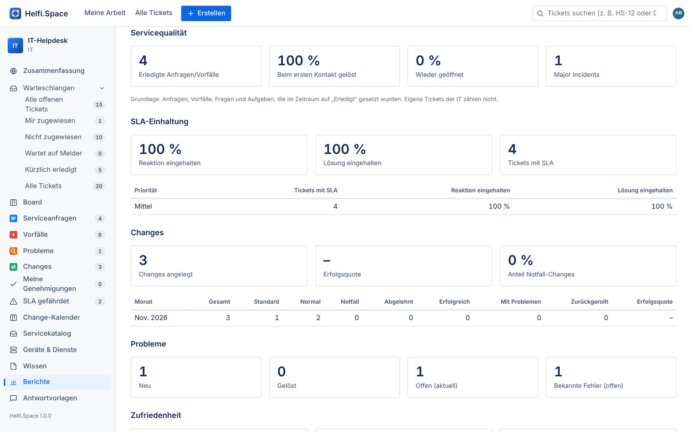
ITIL-Kennzahlen im Bericht
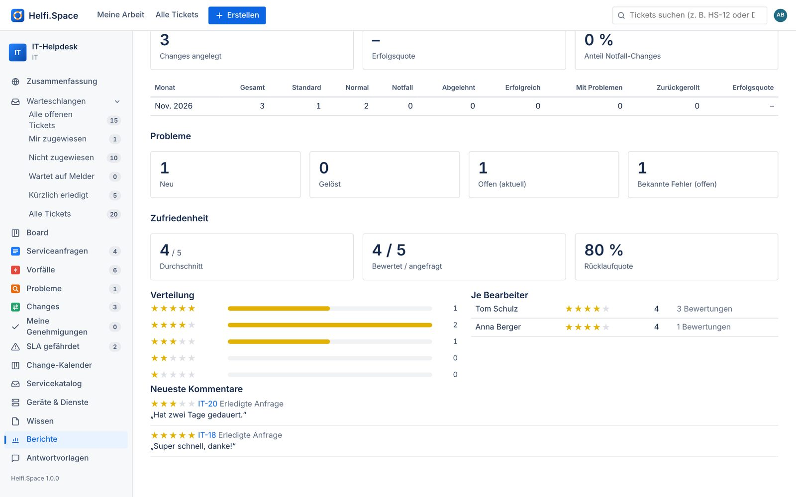
Zufriedenheit im Bericht
Für Administratoren: Einrichtung Admin
Installation
Voraussetzung ist Docker mit Compose (Linux-Server, Synology …). Aus dem neuesten Release docker-compose.yml, env.example und update.sh herunterladen, dann:
mkdir helfi && cd helfi
cp env.example .env
nano .env # mindestens HELFI_BASE_URL anpassen
docker compose up -d
docker compose logs helfi # zeigt den Einrichtungscode
Adresse, unter der Helfi.Space erreichbar ist (für Links in Mails und SSO)
HELFI_HTTP_PORT
Port auf dem Server (Standard 8080)
HELFI_VERSION
latest oder eine feste Version, z. B. 1.5.0
PUID / PGID
Besitzer der Dateien in data/ (Synology z. B. 1026 / 100; nicht 0)
HELFI_TRUST_PROXY
Adresse des Reverse-Proxys (siehe nächster Abschnitt)
HELFI_SECRET
optional: eigener Schlüssel für gespeicherte Kennwörter – nur bei der Einrichtung setzen
TZ
Zeitzone, z. B. Europe/Berlin
HTTPS und Reverse-Proxy
Helfi.Space selbst spricht HTTP auf Port 8080. Für den Betrieb gehört ein Reverse-Proxy mit HTTPS davor (Synology-Reverse-Proxy, Nginx Proxy Manager, Caddy, Traefik …). Danach HELFI_BASE_URL=https://helfi.firma.local setzen – Cookies werden dann automatisch als Secure markiert.
Trage die Adresse des Proxys in HELFI_TRUST_PROXY ein, z. B. 10.0.10.5 (mehrere mit Komma: loopback, 10.0.10.5). Ohne diesen Eintrag glaubt Helfi.Space X-Forwarded-For nur vom eigenen Rechner (loopback); Werte wie true oder eine Zahl werden mit einer Warnung im Protokoll ignoriert. Steht der Proxy auf einem anderen Rechner, sieht Helfi.Space ohne Eintrag nur ihn: Die Bremse gegen Kennwort-Raten trifft dann alle gemeinsam, und jeder Zugriff gilt sicherheitshalber als „von außen“.
Ersteinrichtung
Beim ersten Aufruf von HELFI_BASE_URL startet der Einrichtungsassistent. Er fragt nach dem Einrichtungscode aus dem Container-Protokoll (docker compose logs helfi) und legt den lokalen Administrator und das erste Projekt an. Danach geht es direkt zur AD-Einrichtung.
Active Directory
Administration → Active Directory
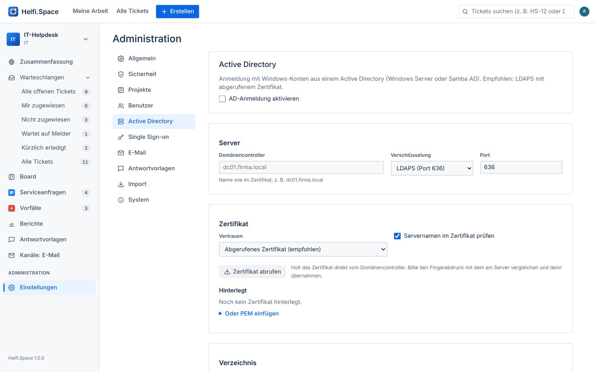
Einstellungen für Active Directory
Domänencontroller mit dem Namen eintragen, der im Zertifikat steht (z. B. dc01.firma.local). Verschlüsselung: LDAPS (636) oder StartTLS (389).
Zertifikat abrufen und den SHA-256-Fingerabdruck mit dem am Server vergleichen, dann Zertifikat übernehmen.
Windows: certlm.msc → Eigene Zertifikate → Zertifikat des DCs. Samba: openssl x509 -in /var/lib/samba/private/tls/cert.pem -noout -fingerprint -sha256
Dienstkonto eintragen, z. B. svc-helfi@firma.local – ein normales Domänenkonto ohne besondere Rechte.
Gruppen für Administratoren und Bearbeiter, z. B. Helfi-Admins und Helfi-Bearbeiter (Name oder DN, verschachtelte Gruppen zählen mit). Optional eine Gruppe „Zugelassene Benutzer“.
Verbindung testen, am besten mit einer Testanmeldung. Ein leerer Base-DN wird dabei übernommen; eine gefundene Microsoft-Zertifizierungsstelle (AD CS) lässt sich mit übernehmen, dann bleiben erneuerte DC-Zertifikate gültig.
AD-Anmeldung aktivieren und speichern.
Benutzer entstehen bei der ersten Anmeldung oder wenn ein Bearbeiter sie als Teilnehmer aus dem AD hinzufügt (Teilnehmer aus dem AD vorschlagen, Standard an, braucht das Dienstkonto). Ihre Rolle folgt bei jeder Anmeldung den Gruppen, außer ein Admin hat sie unter Benutzer mit „Rolle fest“ gesperrt. Helfi.Space prüft täglich, ob das Zertifikat noch passt und bald abläuft, und zeigt Probleme als Hinweis an.
Single Sign-on
Administration → Single Sign-on (OpenID Connect: Microsoft Entra ID, ADFS, Keycloak, Authentik …)
Beim Anbieter eine App anlegen und als Umleitungs-URI die angezeigte Adresse eintragen, z. B. https://helfi.firma.local/auth/oidc/callback.
Issuer-URL, Client-ID und Client-Geheimnis eintragen und Testen. Entra ID: https://login.microsoftonline.com/<Mandanten-ID>/v2.0 und unter Tokenkonfiguration den Gruppenanspruch hinzufügen.
Admin- und Bearbeiter-Gruppe eintragen (bei Entra ID die Gruppen-IDs).
Optional „direkt zu SSO weiterleiten“. Die normale Anmeldung bleibt unter /login?local=1 erreichbar.
SSO und AD zusammen: Mit „Mit AD-Konten zusammenführen für Domäne“ (z. B. firma.local) ist m.muster@firma.local aus dem SSO dasselbe Konto wie der AD-Benutzer m.muster. Nur eintragen, wenn der Anbieter keine Gastkonten anderer Organisationen zulässt. Steht im Token nur die E-Mail-Adresse (kein preferred_username/UPN), wird nur zusammengeführt, wenn der Anbieter sie als bestätigt meldet (email_verified). E-Mail-Adressen aus dem SSO werden nur übernommen, wenn sie bestätigt oder gleich dem Anmeldenamen der freigegebenen Domäne sind.
Stabil über die AD-Kennung (empfohlen): Unter Claim mit AD-Kennung den Claim eintragen, der objectSid oder objectGUID enthält – bei Entra ID onprem_sid (optionaler Claim), bei Keycloak/Authentik ein eigenes Mapping. Dann wird nur noch darüber zusammengeführt, nicht über frei wählbare Namen. Mit Dienstkonto wird das AD-Konto bei jeder SSO-Anmeldung geprüft (deaktiviert, Gruppe, Rolle); ist das AD nicht erreichbar, bricht die SSO-Anmeldung ab.
Zwei-Faktor-Anmeldung und Netze
Administration → Sicherheit
Zwei-Faktor-Pflicht, interne Netze und eigener Internetanschluss
Einstellung
Auswahl
Pflicht bei Anmeldung von außen
alle Benutzer (Standard) · Bearbeiter und Administratoren · nur Administratoren · niemand
Im internen Netz
keine Abfrage (Standard) · nur Administratoren · Bearbeiter und Administratoren · alle Benutzer
Interne Netze: eine Adresse oder ein Bereich pro Zeile. Die Vorgabe deckt alle privaten Bereiche ab, auch Docker-Netze und ein Gäste-WLAN – am besten auf die echten Firmennetze eingrenzen, z. B. 10.0.10.0/24.
Eigener Internetanschluss: Öffentliche IP oder DynDNS-Name (z. B. 203.0.113.10 oder helfi.dyndns.example). Zugriffe von dort gelten als intern; Namen werden alle 5 Minuten neu aufgelöst. Achtung bei einem Gäste-WLAN am selben Anschluss.
Reverse-Proxy: Ohne passendes HELFI_TRUST_PROXY gilt jeder Zugriff als extern; die Seite zeigt den aktuellen Wert.
Ersteinrichtung auch von außen erlauben: standardmäßig aus.
SSO-Anmeldung als zweiter Faktor:Nur wenn der Anbieter eine MFA meldet (Standard: das Token belegt eine Mehrfaktor-Anmeldung über amr oder einen eingetragenen acr-Wert), Immer oder Nie. Sonst fragt Helfi.Space nach der SSO-Anmeldung seinen eigenen Code ab. Installationen mit aktivem SSO behalten beim Update „Immer“.
2FA zurücksetzen für eine Person: Benutzer → 2FA zurücksetzen.
E-Mail
Administration → E-Mail
Postfach abrufen (IMAP)
Postfach abrufen (IMAP): Server, Benutzer und Kennwort des Helpdesk-Postfachs. Neue Mails werden Tickets, Antworten werden Kommentare. Verarbeitete Mails werden gelesen markiert oder in einen Ordner verschoben – empfohlen ist ein eigener Ordner. Übersprungene Mails und Unzustellbarkeitsberichte bleiben gelesen im Posteingang und werden nicht automatisch gelöscht. Verarbeitete Mails bekommen ein eigenes Kennzeichen; wird das Postfach parallel in Outlook gelesen, gehen sie trotzdem nicht verloren (wenn der Mailserver eigene Kennzeichen kann, sonst besser nicht parallel lesen).
Antworten per Ticketnummer im Betreff dürfen nur der Melder, Anfrage-Teilnehmer und alle, die schon im Ticket geschrieben haben; wer die Nummer nur errät, bekommt ein neues Ticket. Antworten auf Mails von Helfi.Space werden über die Message-ID zugeordnet.
Versand (SMTP): als Absender am besten dieselbe Adresse wie das Postfach, dann landen Antworten wieder im Ticket.
Absender ist immer das Ticketsystem – nie die Adresse eines Bearbeiters, keine persönlichen Signaturen. Damit der Melder weiß, wer ihn betreut, enden Antwort- und Erledigt-Mails mit „Viele Grüße“, dem Namen des Bearbeiters und dem Namen des Systems; ist das Ticket jemand anderem zugewiesen, steht „Ihr Ansprechpartner: …“ dabei. Im Browser heißt das Feld für Benutzer ebenfalls „Ihr Ansprechpartner“.
Absender im Active Directory nachschlagen: Unbekannte Absender werden im AD gesucht und gleich als AD-Benutzer angelegt. Sonst werden sie E-Mail-Kontakte; melden sie sich später an, gehören ihnen ihre Tickets.
Benachrichtigungen: einzeln abschaltbar – Eingangsbestätigung, Antworten und Erledigt an Melder und Teilnehmer, Zuweisung an Bearbeiter, Mail an neu hinzugefügte Teilnehmer und an Personen, die mit @ erwähnt werden.
Empfänger in An/CC werden Teilnehmer (abschaltbar) – bei neuen Tickets und bei Antworten auf Mails von Helfi.Space, nicht bei Zuordnung nur über die Nummer im Betreff.
Aufbewahrung: „Verarbeitete Mails löschen nach … Tagen“ (Standard: nie). Gelöscht wird nur im Ordner für verarbeitete Mails, nie im Posteingang.
Schutz vor Mail-Schleifen und Absender-Regeln
Absender-Regeln und gesperrte Empfänger
Unzustellbarkeitsberichte und Lesebestätigungen werden nie zu Tickets und nie beantwortet. Die betroffene Adresse bekommt 7 Tage lang keine Mails (Gesperrte Empfänger, dort vorzeitig freigebbar). Gesperrt werden nur Adressen aus echten Kopfzeilen des Berichts bzw. aus seinem Teil message/delivery-status.
Absender-Regeln (Adresse oder Muster wie *@pve.firma.local): „Ticket anlegen, nie antworten“ – wahlweise in ein eigenes Projekt – oder „Ignorieren“.
Automatisch erzeugte Mails (Proxmox, NAS, Monitoring; erkennbar an Auto-Submitted, Precedence: bulk oder noreply@) werden nur mit der Regel „Ticket anlegen, nie antworten“ angenommen. Unter Zuletzt übersprungene E-Mails stehen Absender und Grund.
Mehr als 20 neue Tickets pro Stunde vom selben Absender werden ignoriert.
Projekte
Administration → Projekte: Projekte anlegen (Schlüssel wie IT oder NET und Name), Leitung festlegen, archivieren (bleibt mit allen Tickets erhalten, verschwindet aus der Auswahl) oder löschen. Ein Projekt mit Tickets lässt sich nur löschen, wenn seine Tickets dabei in ein anderes Projekt verschoben werden; vorher wird automatisch gesichert.
Projekte
Benutzer
Administration → Benutzer listet alle Konten mit Herkunft (lokal, AD, SSO, E-Mail-Kontakt), Rolle, 2FA-Status und letzter Anmeldung. Hier legst du lokale Benutzer an, änderst Rollen („Rolle fest“ verhindert, dass die AD-Gruppen sie überschreiben), deaktivierst Konten und setzt die 2FA zurück. Selbst registrierte Konten sind gekennzeichnet; ist unter Sicherheit → Registrierung und Kennwort vergessen die Freigabe eingeschaltet, steht bei neuen Konten „Wartet auf Freigabe“ mit dem Knopf Freigeben.
Automatische Abmeldung (Administration → Sicherheit): Frist ohne Aktivität für alle (Standard 12 Stunden aus HELFI_SESSION_HOURS), für Admins (Standard 60 Minuten) und optional für Zugriffe von außen – es gilt die kürzeste passende. Zwei Minuten vor Ablauf fragt Helfi „Noch da?“; wer weiterarbeitet, bleibt angemeldet. Optional: „Beim Schließen des Browsers abmelden“.
Registrierung und Kennwort vergessen (Administration → Sicherheit, Registrierung standardmäßig aus): Externe legen sich selbst ein lokales Konto mit der Rolle „Benutzer“ an; die E-Mail-Adresse wird per Link bestätigt, ein vorhandener E-Mail-Kontakt wird dabei mit seinen Anfragen zum Konto. Optional: erlaubte Mail-Domains und Freigabe durch einen Admin. „Kennwort vergessen“ gilt standardmäßig für lokale Konten mit der Rolle „Benutzer“, wahlweise für alle lokalen Konten oder gar nicht. Beides braucht den E-Mail-Versand.
KI (Administration → KI, standardmäßig aus): Adresse einer OpenAI-kompatiblen Schnittstelle (z. B. Ollama: http://<host>:11434/v1) und optional ein API-Schlüssel (verschlüsselt gespeichert). Die installierten Modelle werden automatisch abgerufen und stehen in einer Auswahlliste – bei Ollama mit Parameterzahl, Quantisierung und Größe, Cloud-Modelle in einer eigenen Gruppe. Embedding-Modelle sind ausgeblendet; fehlt ein Modell, hilft Neu laden oder Anderes Modell eingeben …. Für den Echtbetrieb empfiehlt sich ein selbst gehostetes Modell im eigenen Netz; bei Cloud-Modellen oder externen Adressen weist die Seite darauf hin, dass Ticketinhalte das Haus verlassen. Interne Notizen werden nur gesendet, wenn eingeschaltet; Anhänge nie. Testen prüft die Verbindung.
Die Modelle des Ollama-Servers zur Auswahl – Cloud-Modelle getrenntBenutzerverwaltung
Erscheinungsbild
Administration → Allgemein → Erscheinungsbild
Logo, Hauptfarbe und Kopfzeile mit Vorschau
Logo als PNG oder SVG (höchstens 512 KB) für Kopfzeile, Anmeldeseite und Browser-Tab. SVGs mit Skripten oder externen Verweisen werden abgelehnt.
Hauptfarbe mit Kontrastprüfung (Warnung unter 4,5:1) und Kopfzeile hell oder in der Hauptfarbe.
Auf Standard zurücksetzen stellt alles wieder her.
Anmeldeseite
Administration → Allgemein → Anmeldeseite: eigene Überschrift, Begrüßungstext auf Deutsch und Englisch (z. B. wie man im Notfall Hilfe bekommt) und eine eigene Bezeichnung für das Anmeldefeld („Windows-Anmeldename“). Nur Text: **fett**, Links und Mailadressen werden anklickbar, HTML wird nie ausgeführt.
Anmeldeseite anpassen mit Vorschau
Import aus einem anderen Ticketsystem
Administration → Import übernimmt Tickets mit Kommentaren und Anhängen aus Zammad, Znuny / OTRS, GLPI, Zendesk, Freshdesk, Jira (Cloud, Server/Data Center) oder einer CSV-Datei. Die Zugangsdaten werden nicht gespeichert.
Quelle wählen – hier Zammad mit Zugriffstoken
Quelle wählen und verbinden:
Zammad: Adresse und Zugriffstoken (in Zammad unter Profil → Token-Zugriff, Berechtigung ticket.agent).
Znuny / OTRS: einmalig in Znuny unter Admin → Webservices das mitgelieferte Beispiel GenericTicketConnectorREST importieren; in Helfi.Space die volle Adresse des Webservice sowie Anmeldename und Kennwort eines Bearbeiters mit Leserechten eintragen.
GLPI: REST-API in GLPI aktivieren (Einrichtung → Allgemein → API), Adresse bis apirest.php und das persönliche Token (Einstellungen → Fernzugriffsschlüssel). Einheiten werden zu Projekten.
Zendesk: Adresse, E-Mail und API-Token; mit einem Administrator-Konto kommen auch archivierte Tickets mit.
Freshdesk: Adresse und API-Schlüssel aus dem Profil (höchstens 30.000 Tickets über die Liste).
Jira: Adresse und API-Token (Cloud) bzw. Personal Access Token (Server/Data Center).
CSV-Datei: hochladen und die Spalten zuordnen – erkannte Spalten sind schon eingetragen, Pflicht ist nur der Titel. Eine Spalte Projekt / Queue verteilt die Tickets auf mehrere Projekte.
Projekte wählen (Gruppen, Queues, Einheiten oder Projekte) und Zielprojekt festlegen.
Status und Typen zuordnen (Vorschläge sind eingetragen).
Importieren – mit Fortschritt, abbrechbar.
CSV-Datei: Spalten zuordnen mit Beispielwerten
Ticketnummern bleiben möglichst erhalten (SUP-123 bleibt SUP-123, Zammad #31011 wird SD-31011; sehr lange, datumsbasierte Nummern bekommen eine neue, die alte steht im Verlauf). Interne Notizen und ihre Dateien bleiben intern. Personen werden über die E-Mail-Adresse zugeordnet, es werden keine Mails verschickt. Vor jedem Import-Start legt Helfi.Space eine Sicherung an. Ein zweiter Lauf aktualisiert nur Geändertes und legt nichts doppelt an – so lässt sich vorab probehalber und am Stichtag noch einmal importieren (bei CSV mit demselben Namen der Quelle).
Für Administratoren: Betrieb Admin
Updates
Mit Container-Verwaltung (empfohlen)
Dockhand, Watchtower oder Tugtainer erkennen neue Images von ghcr.io/soleil0815/helfi.space.ticket:latest und aktualisieren den Container – am besten nachts. Helfi.Space sichert die Datenbank beim Start einer neuen Version selbst (data/backups/helfi-vor-<Version>-….sqlite) und stellt sie danach um.
Von Hand
./update.sh # neueste Version
./update.sh 1.5.0 # bestimmte Version (wird in .env festgehalten)
./update.sh -y # ohne Rückfragen
./update.sh --cleanup # Reste früherer Updates anzeigen und nach Rückfrage löschen
./update.sh --offline helfi-1.5.0-amd64.tar.gz 1.5.0 # ohne Internet
update.sh holt die neue Version, übernimmt eine neuere docker-compose.yml (die alte bleibt als docker-compose.yml.alt-…), startet den Container und wartet auf den Gesundheitscheck. Startet die neue Version nicht, stellt es die vorherige Version samt Datenbanksicherung wieder her; die .env steht danach wieder auf der vorherigen Version. Es läuft mit /bin/sh, auch auf einer Synology. --cleanup fasst data/, Sicherungen, .env und die aktuelle docker-compose.yml nie an.
docker compose up schlägt fehl: Fehlermeldung, Exit-Code 1, .env und docker-compose.yml werden zurückgestellt. Gibt es eine vorherige Version, fragt update.sh vorher, ob sie wieder gestartet werden soll (mit -y automatisch).
Startet noch: Ist die neue Version nach HELFI_UPDATE_WAIT noch „starting“, fragt update.sh, ob es noch einmal warten soll (mit -y automatisch einmal).
Datenbank nicht zurückgespielt: Das sagt update.sh ausdrücklich, z. B. wenn die Sicherungen nicht lesbar sind (dann sudo ./update.sh -y) oder es keine bzw. nur eine unvollständige Sicherung gibt.
--offline ohne Version: Die Version wird aus dem Image übernommen und in der .env festgehalten, sonst bricht update.sh ab. Ein relativer Pfad gilt ab dem aktuellen Ordner.
HELFI_UPDATE_WAIT (Wartezeit, Standard 120 Sekunden) und HELFI_IMAGE_REPO werden beim Aufruf gesetzt, nicht in der .env, z. B. HELFI_UPDATE_WAIT=300 ./update.sh. Für eine eigene Registry auch image: in der docker-compose.yml anpassen; sie gilt dann als angepasst und wird nicht mehr automatisch ersetzt.
Nach einem Update lädt der Browser die neue Oberfläche sofort (ab Version 1.5.0). Erscheint bei älteren Versionen noch die alte Oberfläche, hilft einmal Strg+Umschalt+R.
Version festhalten und zurückgehen
In der .env eine feste Version eintragen, z. B. HELFI_VERSION=1.4.0.
Hat die neuere Version die Datenbank schon umgestellt, startet die ältere nicht und nennt im Protokoll die passende Sicherung. Dann:
docker compose down
cp data/helfi.sqlite data/helfi.sqlite.neu
cp data/backups/helfi-vor-1.5.0-<Datum>.sqlite data/helfi.sqlite
rm -f data/helfi.sqlite-wal data/helfi.sqlite-shm
docker compose up -d
Sicherung und Wiederherstellung
Automatisch: täglich, vor jedem Versionswechsel, vor dem Löschen eines Projekts und vor jedem Import-Start in data/backups/. Ein abgelehntes Projekt-Löschen legt keine Sicherung an. Von Hand:Administration → System → Jetzt sichern.
Sicherungen aufbewahren (Standard 10): So viele der neuesten Sicherungen bleiben je Art – täglich, von Hand, vor Update, vor Projekt-Löschen und vor Import. Ältere werden beim Speichern und danach laufend gelöscht, mindestens die neueste jeder Art bleibt immer. Die Liste darunter zeigt Art, Datum, Größe und den belegten Platz insgesamt; mit 🗑 löschst du eine einzelne Sicherung.
Jede Sicherung entsteht zuerst als .part-Datei und wird erst fertig umbenannt. Eine nach einem Absturz liegengebliebene .part-Datei wird nie verwendet und nach einer Stunde beim nächsten Aufräumen entfernt.
Die Sicherungen enthalten nur die Datenbank. Immer den ganzen Ordner data/ auf ein anderes Laufwerk sichern – mit Anhängen, Logo und secret.key.
Ohne secret.key (oder das gesetzte HELFI_SECRET) lassen sich gespeicherte Kennwörter und 2FA-Schlüssel nicht mehr entschlüsseln.
System: Version, Datenbank, Sicherungen
Sicherheit
Kennwörter lokaler Konten mit scrypt, hinterlegte Zugangsdaten (Dienstkonto, Postfach, SSO) mit AES-256-GCM verschlüsselt; sie werden nie an den Browser geschickt.
Wer bei AD, IMAP, SMTP oder SSO Server, Port, Verschlüsselung, Dienstkonto bzw. Benutzer, Issuer oder Client-ID ändert die Zertifikatsprüfung abschwächt (auch „Abgerufenes Zertifikat“ → „System-Zertifizierungsstellen“) oder ein anderes AD-Zertifikat hinterlegt, muss das Kennwort bzw. Geheimnis im selben Schritt neu eingeben, sonst wird nicht gespeichert. So geht ein gespeichertes Geheimnis nie an einen anderen Server; auch Verbindungstests mit abgeschwächter Prüfung senden es nicht.
Sitzungen enden nach HELFI_SESSION_HOURS (Standard 12 Stunden) ohne Nutzung und spätestens 30 Tage nach der Anmeldung. Deaktivierte Konten bekommen bei der Anmeldung dieselbe Meldung wie bei falschem Kennwort.
Zwei-Faktor-Anmeldung nach RFC 6238, jeder Code nur einmal, Wiederherstellungscodes nur als Hash.
Bremse bei falschen Kennwörtern, Cookies HttpOnly/SameSite, CSRF-Schutz, strenge Content-Security-Policy. Die Oberfläche lädt nichts aus dem Internet.
HTML-Mails werden bereinigt und in einem abgeschotteten Rahmen ohne Skripte angezeigt.
Der Container läuft ohne root-Rechte, mit schreibgeschütztem Programmteil, ohne zusätzliche Linux-Rechte und mit no-new-privileges.
Tickets werden nie gelöscht; jede Änderung steht im Verlauf.
Fragen und Lösungen
Problem
Lösung
Mails von Proxmox, NAS oder Monitoring werden übersprungen
Absender-Regel „Ticket anlegen, nie antworten“ anlegen. Die genaue Absenderadresse steht unter E-Mail → Zuletzt übersprungene E-Mails.
Jeder Zugriff gilt als „von außen“
HELFI_TRUST_PROXY auf die Adresse des Reverse-Proxys setzen; interne Netze prüfen. Die Seite Sicherheit zeigt, wie deine Adresse erkannt wird.
Handy mit Authenticator verloren
Mit einem Wiederherstellungscode anmelden oder Benutzer → 2FA zurücksetzen; danach im Firmennetz neu einrichten.
AD-Anmeldung geht nicht mehr, Hinweis zum Zertifikat
Das DC-Zertifikat wurde erneuert: Active Directory → Zertifikat abrufen und übernehmen (oder die Zertifizierungsstelle hinterlegen).
Rolle eines AD-Benutzers stimmt nicht
Gruppenmitgliedschaft im AD prüfen; ist der Gruppenname mehrdeutig, den vollständigen DN eintragen. Ist „Rolle fest“ gesetzt, gilt die Rolle aus Helfi.Space.
Hinweis „docker-compose.yml ist veraltet“
./update.sh übernimmt die neue Datei, oder sie aus dem Release laden.
Helfi.Space startet nach dem Wiederherstellen nicht
Passt secret.key bzw. HELFI_SECRET zur Datenbank? Das Protokoll (docker compose logs helfi) nennt die Ursache.